🌻 Présentation
Bienvenue dans SoisFier. SoisFier aide votre famille à installer les routines du quotidien : se brosser les dents, préparer son cartable, se coucher à l'heure. Votre enfant coche ce qu'il a fait, un adulte valide, et ses efforts deviennent visibles : des étoiles, une fleur qui pousse, des récompenses qu'il attend avec impatience.
Pourquoi ça marche
- Votre enfant voit ses progrès : chaque bonne journée fait grandir sa fleur.
- Il apprend à patienter et à épargner : ses étoiles s'échangent contre des récompenses, petites ou grandes.
- Les adultes parlent d'une seule voix : parents, grands-parents ou nounou suivent et valident les mêmes routines.
Les principes
- Un adulte valide. Une étoile ne compte qu'une fois validée. Par défaut, ce que l'enfant coche est validé après minuit s'il n'a pas été refusé (partie 3).
- Pas besoin d'être parfait. Une bonne journée, c'est au moins 75 % des étoiles du jour.
- Une fleur par quinzaine, plus belle selon le nombre de bonnes journées. Les fleurs forment un parterre chaque saison et un jardin chaque année scolaire (partie 4).
- Des récompenses à sa mesure. Leur prix suit le rythme de chaque enfant (partie 2c).
- Les imprévus ne pénalisent pas. Vacances ou repos : on met en pause, ces jours sont neutres (partie 6).
- Les malus restent rares. Réservés aux parents, 3 étoiles au plus, sans effet sur la fleur ni sur les badges (partie 2c).
- Le téléphone de l'enfant n'a pas besoin de compte. Un code donné par un parent suffit (partie 2d).
Pour démarrer, suivez les parties 1, 2a et 2b dans l'ordre. Les autres se lisent au besoin. Touchez une capture pour l'agrandir.
1 Installation et compte
Cette partie installe SoisFier sur un téléphone Android et crée le compte d'un parent, en 10 minutes environ.
Avant de commencer
- Un téléphone Android avec Chrome.
- Une adresse e-mail à laquelle vous avez accès depuis ce téléphone.
- L'adresse de l'application : https://pyramid85cl209.github.io/SoisFier2/
- Pour rejoindre une famille existante : le code d'invitation à 6 caractères donné par un parent.
Pour revoir la présentation de l'application : Revoir la présentation.
L'écran d'accueil
L'écran d'accueil regroupe tout ce qu'il faut pour démarrer : se connecter, créer un compte, connecter le téléphone d'un enfant ou installer l'application.
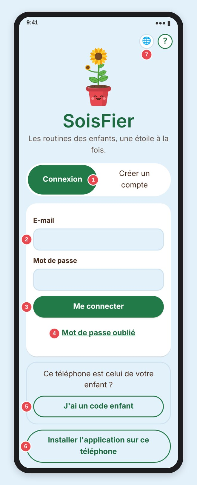
- Connexion / Créer un compte : bascule entre les deux formulaires.
- E-mail et mot de passe : les identifiants du parent.
- Me connecter : ouvre l'espace parent.
- Mot de passe oublié : envoie un lien de réinitialisation à l'adresse saisie.
- J'ai un code enfant : uniquement sur le téléphone de l'enfant (voir l'étape 4).
- Installer l'application sur ce téléphone : ajoute SoisFier à l'écran d'accueil du téléphone.
Choisir la langue
Côté adulte, le bouton 🌐 se trouve en haut de chaque écran, à côté du « ? ». Sur l'écran où l'on saisit le code enfant, il est seul ; en mode enfant, il est à côté du cadenas. La langue choisie s'applique tout de suite, sur cet appareil seulement, et sert aussi pour les rappels qu'il reçoit. Chaque membre de la famille, comme le téléphone de l'enfant, peut utiliser une langue différente. Le mode d'emploi existe aussi en العربية et en English (bouton 🌐 en haut de cette page).
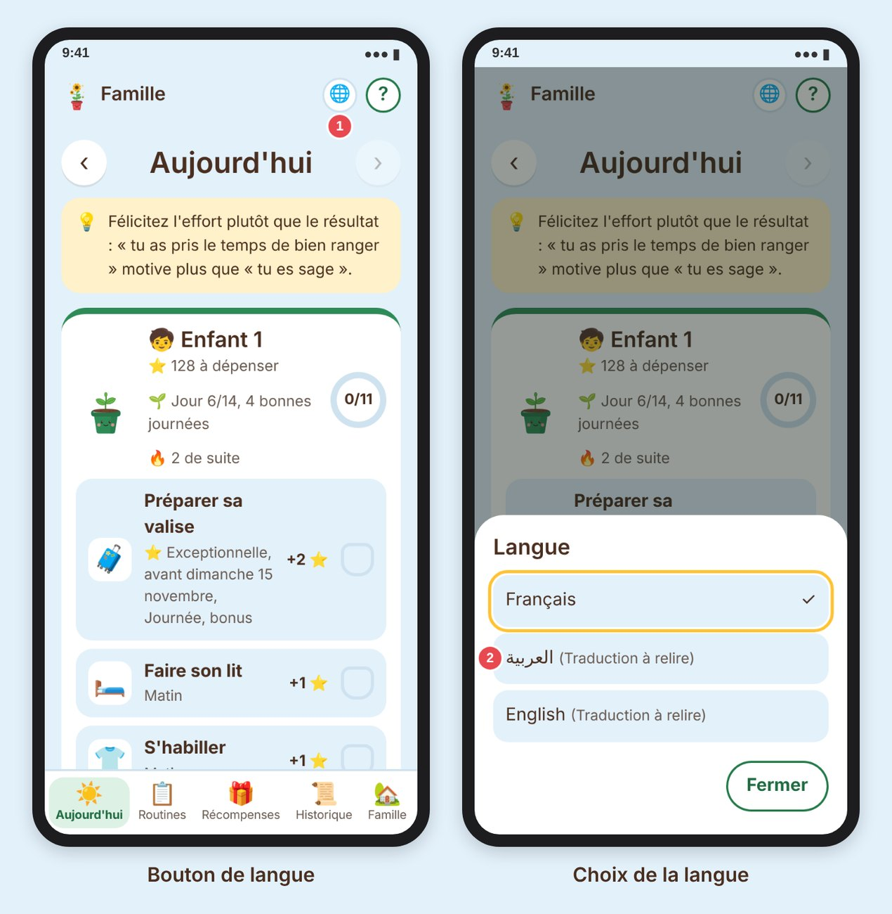
Étape 1 : installer l'application
Une fois installée, SoisFier s'ouvre comme une application, sans barre d'adresse.
- Ouvrez https://pyramid85cl209.github.io/SoisFier2/ dans Chrome.
- En bas de l'écran d'accueil, touchez Installer l'application sur ce téléphone (6). Si le bouton n'apparaît pas : menu ⋮ de Chrome, puis Ajouter à l'écran d'accueil.
- Dans la fenêtre qui s'ouvre, touchez Installer.
- L'icône SoisFier apparaît sur l'écran d'accueil du téléphone. Ouvrez-la : c'est elle qu'il faut utiliser ensuite.
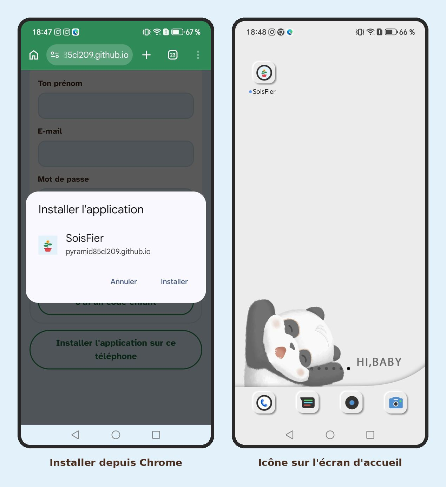
Étape 2 : créer son compte
Chaque adulte a son propre compte, avec son e-mail. Un compte se crée une seule fois.
- Touchez l'onglet Créer un compte (1).
- Saisissez votre prénom (2), votre e-mail (3) et un mot de passe d'au moins 6 caractères (4).
- Touchez Créer mon compte (5). Le message « Vérifiez votre boîte mail » s'affiche : touchez Compris.
- Ouvrez l'e-mail « Confirm your email address » envoyé par Supabase Auth (il est en anglais) et touchez le lien Confirm email address.
- Revenez dans SoisFier, onglet Connexion, et connectez-vous avec votre e-mail et votre mot de passe.
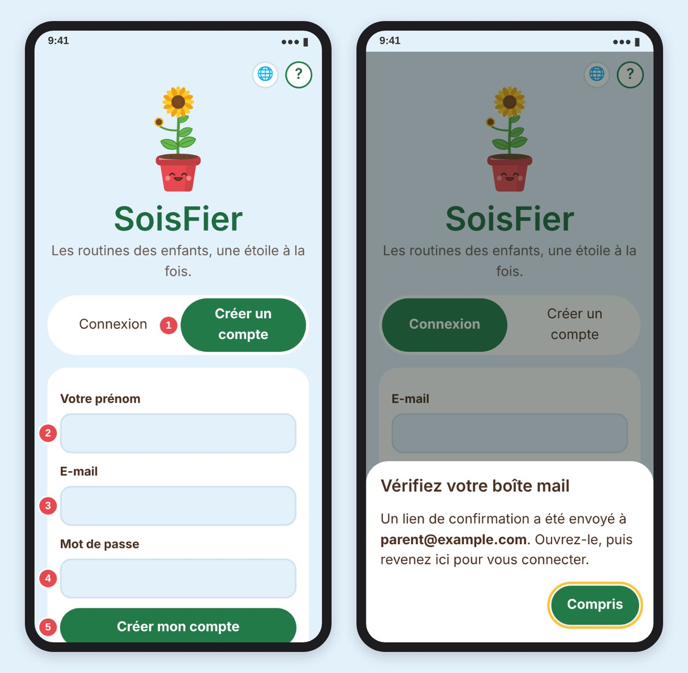
Le lien de confirmation peut ouvrir une page dans le navigateur au lieu de l'application. Ce n'est pas grave : le compte est confirmé, il suffit de revenir dans l'application pour se connecter.
Étape 3 : créer ou rejoindre sa famille
Après la première connexion, l'écran « Bienvenue » demande de créer une famille ou d'en rejoindre une. Un seul parent crée la famille ; les autres membres la rejoignent avec un code.
Premier parent : créer la famille
- Saisissez le nom de la famille (1), par exemple « Famille Martin ».
- Dans Je suis (2), choisissez votre lien avec les enfants : Papa, Maman, Papy, Mamie, Tonton, Tata, Parrain, Marraine ou Nounou. Il s'affichera dans la langue de chaque membre.
- Vérifiez les réglages de la semaine (3) : l'application propose le premier jour de la semaine, les jours de week-end et le fuseau horaire d'après le téléphone. Touchez Modifier pour les changer (voir ci-dessous).
- Touchez Créer (4).
Autres membres : rejoindre la famille
- Demandez un code d'invitation à un parent. Il le génère dans Famille > Inviter un membre, en choisissant votre lien et vos droits (parent ou proche). Le code est valable 48 heures.
- Saisissez le code d'invitation à 6 caractères (5) et touchez Rejoindre (6).
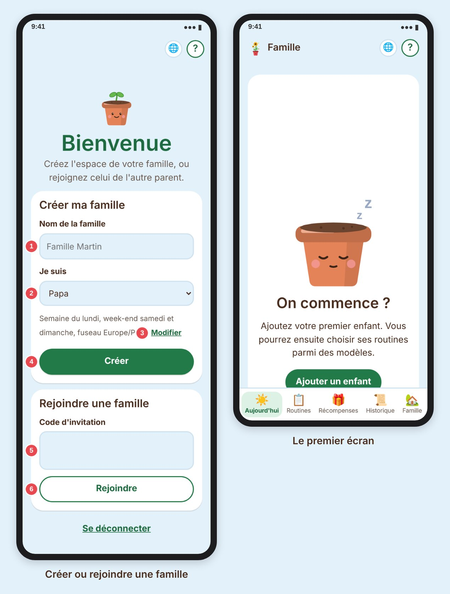
Semaine et fuseau horaire
À la création de la famille, ces réglages sont préremplis d'après le téléphone ; le lien Modifier ouvre la fenêtre ci-dessous. Ils fixent l'ordre des jours, les choix « En semaine » et « Le week-end », les badges de semaine et de week-end, la fin des quinzaines du jardin et l'heure à laquelle commence une nouvelle journée (validation automatique et rappels).
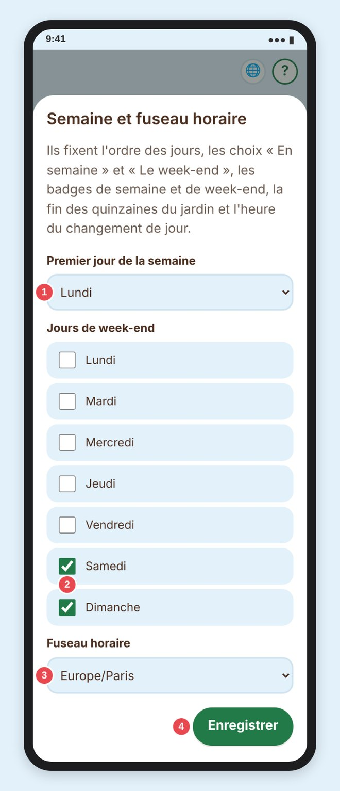
- Premier jour de la semaine : par exemple lundi, samedi ou dimanche.
- Jours de week-end : jusqu'à 3 jours, par exemple samedi et dimanche.
- Fuseau horaire : par exemple Europe/Paris.
- Enregistrer.
Vous pouvez les changer plus tard dans Famille > Semaine et fuseau horaire (partie 5).
Étape 4 : premiers réglages
Le premier écran « On commence ? » invite à ajouter un enfant. Les cinq onglets du bas (Aujourd'hui, Routines, Récompenses, Historique, Famille) donnent accès à tout le reste.
- ☐ Ajouter un enfant : prénom, avatar et couleur de son pot. Seul le prénom est enregistré.
- ☐ Choisir ses routines dans les modèles (matin, midi, soir), puis ajuster les jours et les étoiles.
- ☐ Ajouter des récompenses depuis le référentiel : les prix sont calculés selon le rythme de l'enfant.
- ☐ Inviter l'autre parent et les proches : Famille > Inviter un membre.
- ☐ Activer les rappels : Famille > Rappels, puis autoriser les notifications.
- ☐ Créer un code parent à 4 chiffres : il protège la sortie du mode enfant.
Connecter le téléphone de l'enfant
- Sur le téléphone d'un parent : Famille, puis Connecter son appareil à côté du prénom de l'enfant. Un code à 6 caractères s'affiche, valable 15 minutes.
- Sur le téléphone de l'enfant : installez l'application (étape 1), touchez J'ai un code enfant, saisissez le code puis Connecter ce téléphone. Aucun compte n'est nécessaire pour l'enfant.
Si l'enfant utilise le téléphone d'un parent, utilisez plutôt Mode enfant ici dans Famille : pas de code à saisir.
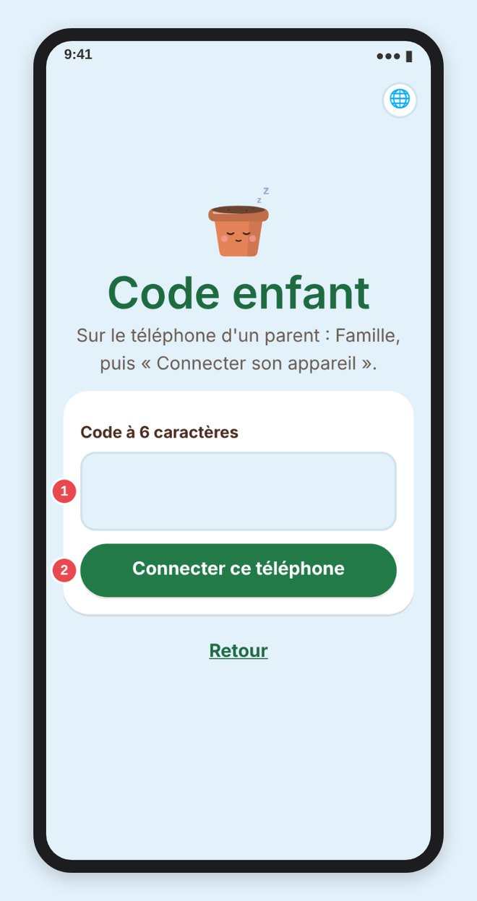
En cas de problème
| Problème | Solution |
|---|---|
| E-mail de confirmation introuvable | Vérifier les spams, chercher « Supabase Auth ». Attendre quelques minutes avant de recréer le compte. |
| « E-mail ou mot de passe incorrect » | Vérifier l'adresse, sinon Mot de passe oublié sur l'écran de connexion. |
| « Confirmez d'abord votre adresse e-mail » | Ouvrir le lien de l'e-mail Supabase Auth, puis se reconnecter. |
| Code d'invitation ou code enfant refusé | Le code a expiré (48 heures pour une invitation, 15 minutes pour un enfant) : en générer un nouveau. |
| Le bouton d'installation n'apparaît pas | Menu ⋮ de Chrome, puis Ajouter à l'écran d'accueil. |
| L'ancienne version reste affichée après une mise à jour | Rien à faire : la mise à jour est automatique. Si l'ancienne version reste affichée, fermez l'application puis rouvrez-la. |
| « Configuration manquante » | Le site est en cours de déploiement ou mal publié : réessayer plus tard et prévenir l'administrateur. |
2a La page Famille et le premier enfant
Cette partie présente la page Famille et ajoute le premier enfant avec ses routines, en 5 minutes environ.
Elle fait suite à la partie 1 : l'application est installée, le compte est créé et la famille existe. Seul un parent peut ajouter un enfant ; un proche voit la page Famille sans ces boutons.
La page Famille
L'onglet Famille (en bas à droite) regroupe les enfants, les membres et tous les réglages, en 8 sections. Chaque section se replie : touchez son titre pour l'ouvrir ou la fermer. Enfants et Vacances et absences sont ouvertes au départ ; votre téléphone retient ensuite ce que vous avez ouvert ou fermé.
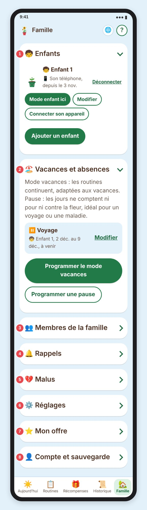
- Enfants : la liste des enfants, avec pour chacun Mode enfant ici, Modifier et Connecter son appareil (partie 2d). Ajouter un enfant est la première chose à faire.
- Vacances et absences : le mode vacances (Premium) et les pauses, dans une seule liste (partie 6).
- Membres de la famille : chaque adulte avec son lien (Papa, Maman…), affiché dans la langue de chacun, et ses droits. Inviter un membre génère un code pour l'autre parent ou un proche.
- Rappels : choisissez une heure le matin et le soir, puis touchez Activer les rappels et autorisez les notifications.
- Malus : les malus prédéfinis de la famille, communs à tous les enfants (Premium, partie 2c).
- Réglages : la semaine et le fuseau horaire, la validation automatique après minuit (laissez-la cochée au début) et le code parent (partie 5).
- Mon offre : Gratuit, Premium ou Fondateur (partie 7).
- Compte et sauvegarde : renommer la famille, télécharger une copie des données, se déconnecter.
Le planning à imprimer se trouve dans l'onglet Routines (partie 2b).
Étape 1 : ajouter un enfant
Premium. La version gratuite suit un enfant ; le Premium permet d'en ajouter d'autres (partie 7).
Seul le prénom est enregistré : pas de nom de famille ni de date de naissance.
- Touchez Ajouter un enfant, dans l'onglet Famille ou sur l'écran « On commence ? ».
- Saisissez son prénom (1).
- Choisissez un avatar (2) parmi les 14 proposés. Il s'affiche à côté de son prénom partout dans l'application.
- Choisissez la couleur de son pot (3). Avec plusieurs enfants, une couleur différente pour chacun permet de distinguer leurs plantes.
- Touchez Ajouter (4).
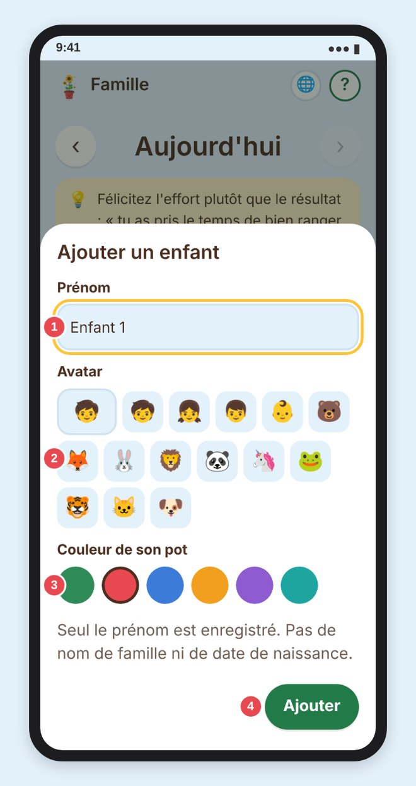
Le prénom, l'avatar et la couleur restent modifiables ensuite : Famille, puis Modifier à côté de l'enfant.
Étape 2 : choisir ses premières routines
Juste après l'ajout, la liste des 22 modèles de routines s'ouvre, classés par moment : le matin, le midi, la journée et le soir.
- Faites défiler la liste et cochez les routines qui correspondent à la journée de l'enfant.
- Touchez Ajouter la sélection, tout en bas.
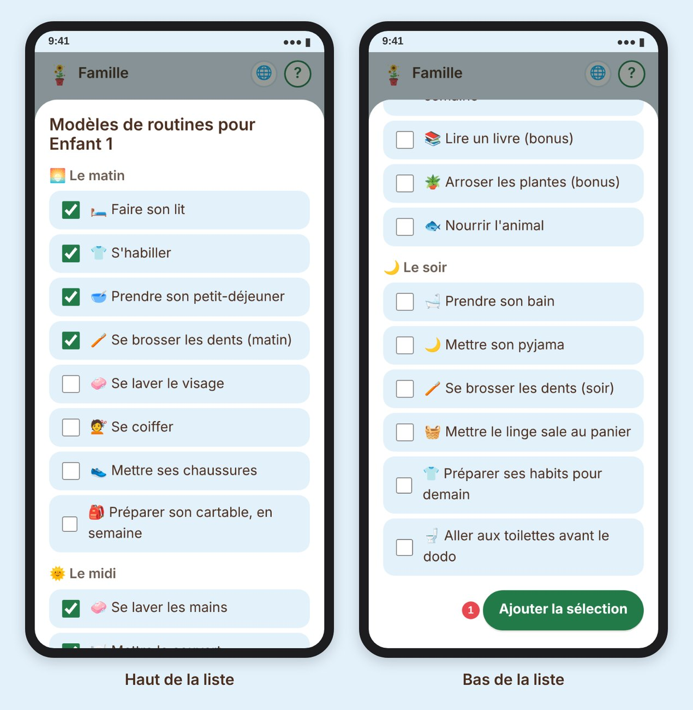
Quelques repères pour bien choisir :
- Commencez petit : 3 ou 4 routines par moment suffisent pour un jeune enfant. Vous pourrez en ajouter plus tard.
- « En semaine » : la routine n'est prévue que du lundi au vendredi (cartable, devoirs).
- « Bonus » : la routine rapporte des étoiles sans compter dans la bonne journée. Utile pour les petits défis.
- Chaque modèle arrive avec 1 ou 2 étoiles et un lieu. Vous pourrez ajuster les jours, les étoiles et le minuteur routine par routine.
Et ensuite
L'enfant apparaît dans l'onglet Aujourd'hui avec son pot et ses routines du jour. Sa première fleur commence le jour même et s'ouvre le dernier jour de la semaine de la famille situé au moins 7 jours plus tard.
Pour un deuxième enfant, recommencez ces deux étapes depuis Famille > Ajouter un enfant.
La suite, dans la partie 2b : modifier une routine, en créer une nouvelle, régler les jours, les étoiles et le minuteur, et ajouter une routine exceptionnelle.
2b Les routines
Cette partie montre comment ajouter, créer, modifier et supprimer les routines d'un enfant, ainsi que les routines exceptionnelles.
Elle fait suite à la partie 2a : l'enfant existe et a déjà quelques routines. Les routines habituelles ne se gèrent que par un parent ; les routines exceptionnelles peuvent aussi être ajoutées par un proche.
L'onglet Routines
L'onglet Routines liste les routines habituelles d'un enfant, classées par moment, puis ses routines exceptionnelles en bas de page.
Tant que l'enfant n'a aucune routine, l'onglet affiche un message qui invite à en choisir trois ou quatre dans les modèles. Commencez par Choisir des modèles (voir la section suivante).
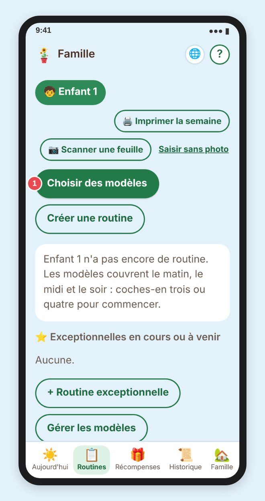
Une fois les routines ajoutées, l'onglet se présente ainsi :
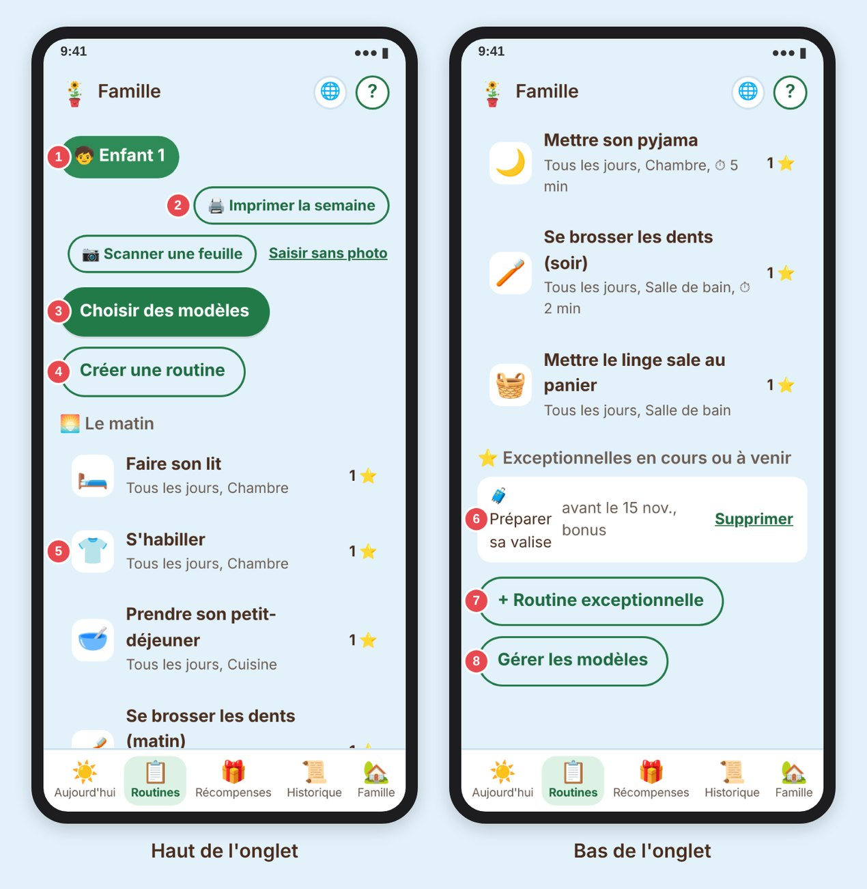
- L'enfant sélectionné : avec plusieurs enfants, touchez son nom pour passer de l'un à l'autre.
- Imprimer la semaine : le planning de la semaine sur une page A4 (voir plus bas).
- Choisir des modèles : ajoute des routines toutes prêtes.
- Créer une routine : une routine sur mesure.
- Une routine : touchez-la pour la modifier ou la supprimer. Sous son nom : les jours, le lieu et le minuteur ; à droite : ses étoiles.
- Exceptionnelles en cours ou à venir : avec leur date et leur type, et un lien Supprimer.
- + Routine exceptionnelle : une tâche ponctuelle.
- Gérer les modèles : les routines exceptionnelles gardées comme modèles.
Ajouter d'autres modèles
Les modèles restent disponibles après le premier choix, pour compléter la journée de l'enfant.
- Touchez Choisir des modèles (2).
- Les routines déjà ajoutées apparaissent grisées, avec la mention « déjà ajoutée » : elles ne peuvent pas être ajoutées deux fois.
- Cochez les nouvelles routines, puis touchez Ajouter la sélection en bas de la liste.
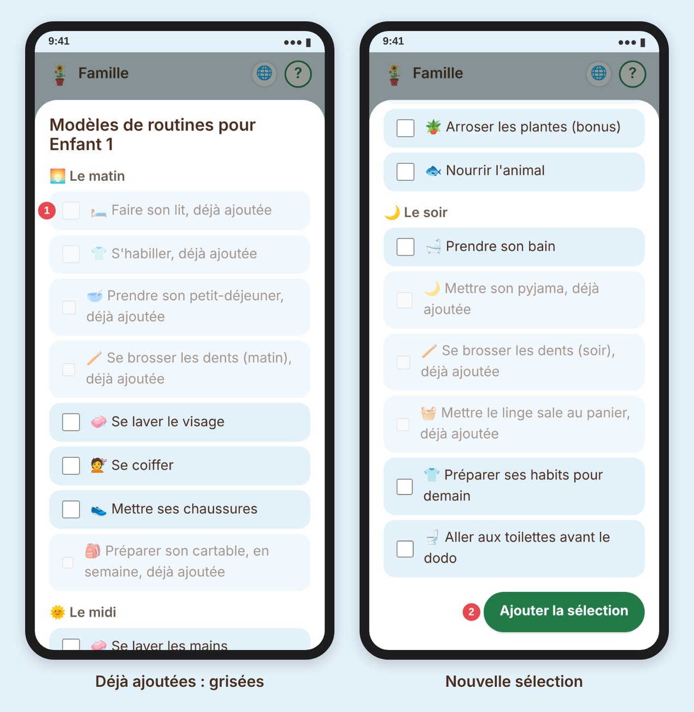
Créer une routine
Touchez Créer une routine (3) pour une routine qui n'existe pas dans les modèles, par exemple « Entraînement de foot ».
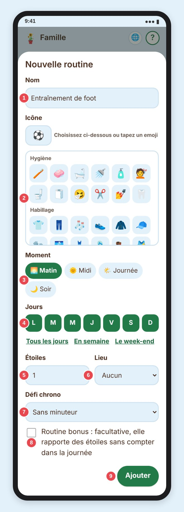
- Nom : court et concret, l'enfant le lira tous les jours.
- Icône : choisissez-la dans la liste classée par catégories (faites-la défiler), ou tapez un emoji dans la case.
- Moment : matin, midi, journée ou soir. Il décide dans quel groupe la routine apparaît.
- Jours : en vert, les jours où la routine est prévue. Touchez un jour pour le retirer, ou utilisez les raccourcis Tous les jours, En semaine et Le week-end.
- Étoiles : de 1 à 5. Plus la routine demande d'effort, plus elle rapporte.
- Lieu : facultatif. Il s'affiche sous le nom pour aider l'enfant à se repérer.
- Défi chrono : facultatif. Un minuteur de 2 à 30 minutes que l'enfant peut lancer pour transformer la routine en défi.
- Routine bonus : cochée, la routine rapporte des étoiles mais ne compte pas dans la bonne journée.
- Ajouter : la routine apparaît dans l'onglet Routines et dans la journée de l'enfant.
Les listes Étoiles, Lieu et Défi chrono s'ouvrent ainsi :
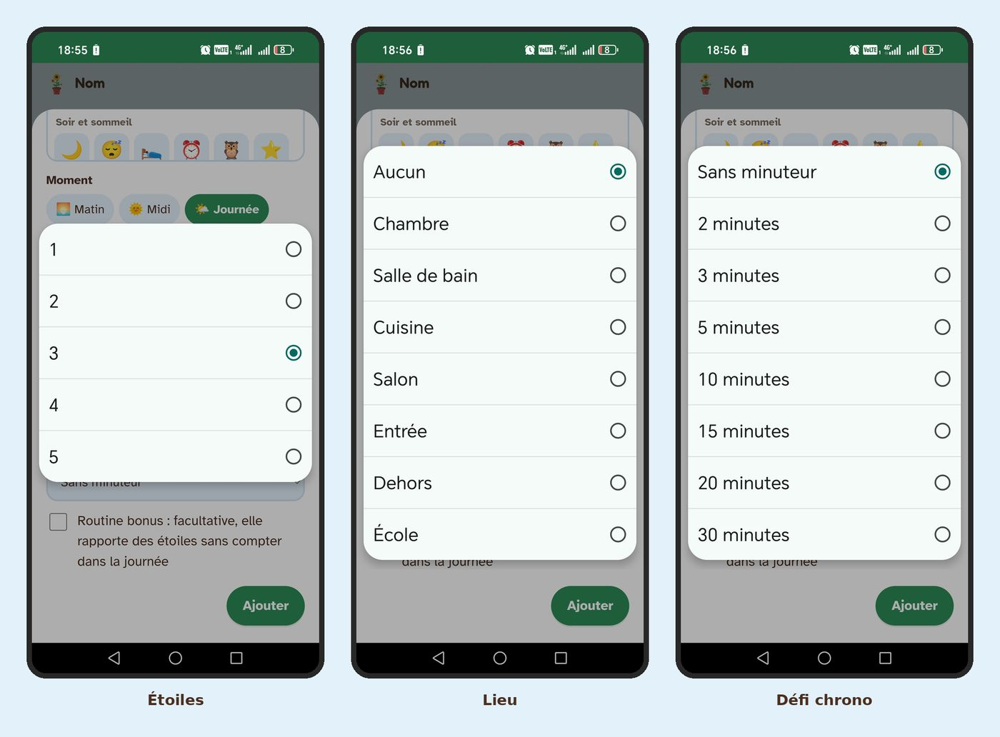
Modifier ou supprimer une routine
- Dans l'onglet Routines, touchez la routine (4). Le formulaire Modifier la routine s'ouvre, déjà rempli.
- Changez ce qui doit l'être : nom, icône, moment, jours, étoiles, lieu, minuteur ou bonus.
- En bas du formulaire, touchez Enregistrer, ou Supprimer pour retirer la routine, puis confirmez.
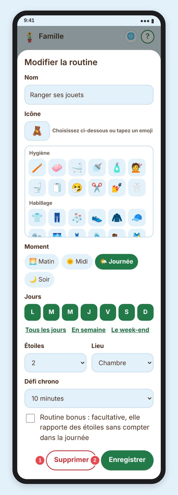
Supprimer une routine la retire des journées à venir. Les étoiles déjà gagnées avec elle sont conservées, et la plante ne recule pas.
Ajouter une routine exceptionnelle
Premium. Les routines exceptionnelles et leurs modèles font partie du Premium (partie 7).
Une routine exceptionnelle est une tâche ponctuelle : un jour précis, ou à faire avant une date. Les parents et les proches peuvent en ajouter, depuis la carte de l'enfant dans l'onglet Aujourd'hui.
- Touchez + Routine exceptionnelle.
- Choisissez un de vos modèles, une des 10 suggestions, ou touchez Créer une nouvelle en bas de la liste.
- Complétez le formulaire :
- Nom (1) et icône, déjà remplis si vous partez d'une suggestion.
- Quand (2) : Le = ce jour-là uniquement ; Avant le = visible chaque jour jusqu'à ce qu'elle soit faite.
- La date (3).
- Type (4) : Bonus (par défaut) rapporte des étoiles sans pouvoir gâcher la journée ; Obligatoire compte dans la bonne journée.
- Étoiles et moment (5).
- Garder comme modèle (6) : cochez-la pour une tâche qui reviendra. Elle apparaîtra en tête de liste la prochaine fois.
- Touchez Ajouter (7).
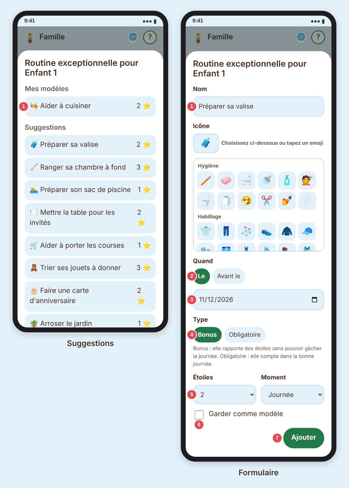
La routine apparaît dans la section « Exceptionnelles en cours ou à venir » (5), puis disparaît une fois sa date passée. Pour retirer un modèle devenu inutile : Gérer les modèles (7).
Imprimer la semaine
Pour le frigo ou un enfant sans téléphone : la semaine en cours sur une page A4, à cocher au crayon.
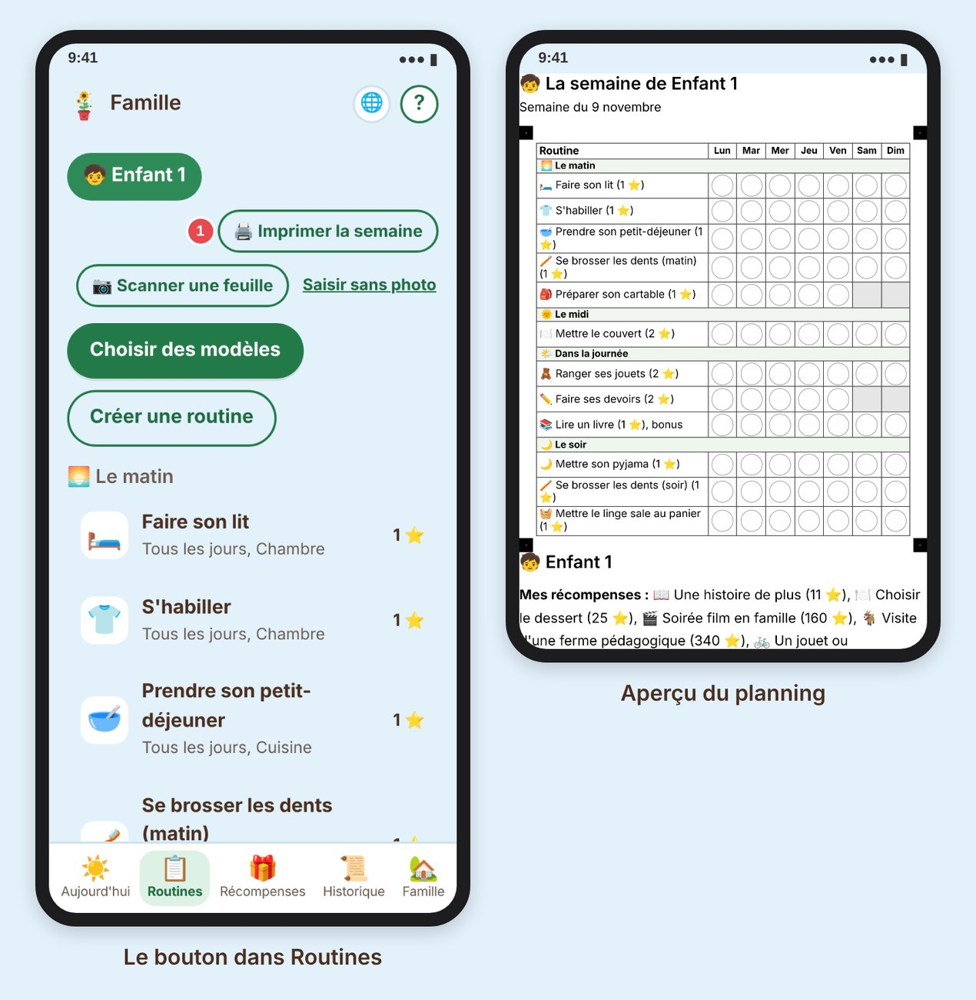
- Dans l'onglet Routines, touchez Imprimer la semaine (1). Une fenêtre s'ouvre : choisissez les enfants à imprimer (avec un seul enfant, rien à choisir), laissez cochée Imprimer les récompenses pour avoir aussi la page des récompenses, puis touchez Imprimer.
- Android ouvre l'aperçu d'impression : choisissez votre imprimante, ou Enregistrer au format PDF pour l'envoyer.
La page reprend les routines par moment, un rond par jour prévu (les cases vides sont les jours sans cette routine), ; les récompenses et leurs prix sont sur une page à part, juste après la semaine de l'enfant (sans QR code, rien à scanner). Pendant un mode vacances, elle applique les réglages des vacances. Les coches sur papier ne remontent pas toutes seules dans l'application : cochez-les depuis l'écran Aujourd'hui (jusqu'à 6 jours en arrière), ou reportez toute la semaine en une fois (Reporter la semaine, Premium). Chaque page de semaine porte en haut un petit QR code et quatre carrés noirs aux angles du tableau : ne les recouvrez pas.
Scanner la feuille ou reporter la semaine (Premium)
Au lieu de cocher jour par jour dans Aujourd'hui, reportez en une fois les coches faites sur la feuille papier, par exemple sur une feuille plastifiée réutilisée chaque semaine.
- Dans l'onglet Routines, touchez 📷 Scanner une feuille. Posez la feuille à plat, bien éclairée, sans flash, et cadrez toute la page, carrés noirs compris, en tenant le téléphone immobile, puis touchez Prendre la photo. Vous pouvez aussi Choisir une photo déjà prise. L'application reconnaît l'enfant de la feuille.
- Sans photo : touchez Saisir sans photo, puis choisissez l'enfant s'il y en a plusieurs.
- Choisissez la semaine : Cette semaine ou La semaine dernière. Les jours à venir ne se cochent pas.
- Vérifiez la grille : les ronds lus comme cochés sont déjà cochés ; un rond marqué ⚠️ à vérifier n'a pas pu être lu avec certitude. Touchez un rond pour le corriger. Une routine déjà validée ce jour-là est marquée déjà faite. Un rond ⏳ en attente est une coche de l'enfant que personne n'a encore validée : vous pouvez toujours le cocher.
- Touchez Reporter : rien n'est enregistré avant.
La photo est lue sur votre téléphone : elle n'est ni envoyée, ni gardée. Pour une bonne lecture, cochez avec un feutre foncé (effaçable sur une feuille plastifiée) et inclinez un peu la feuille si elle fait des reflets. Si la feuille n'est pas reconnue (QR ou carrés hors du cadre, feuille d'une autre famille), reprenez la photo ou saisissez sans photo. Une routine arrêtée depuis l'impression est signalée et n'est pas reportée.
Chaque coche est validée à votre nom, avec ses étoiles, comme si vous l'aviez cochée vous-même ; la fleur, la série et les badges sont mis à jour pour ces jours. Une routine déjà validée ne change pas ; un rond laissé vide ne retire rien. Si une routine n'est pas prévue ce jour-là (par exemple pendant des vacances), elle est signalée et non reportée. Le report demande une connexion internet. En version gratuite, le bouton porte l'étiquette Premium et ouvre la présentation de l'offre ; imprimer la feuille reste gratuit.
Le résultat dans l'onglet Aujourd'hui
Les routines prévues ce jour-là apparaissent dans l'onglet Aujourd'hui, sur la carte de l'enfant. Le compteur à droite indique les routines faites sur le total (ici 0/11), et la ligne sous le prénom indique où en est la fleur.
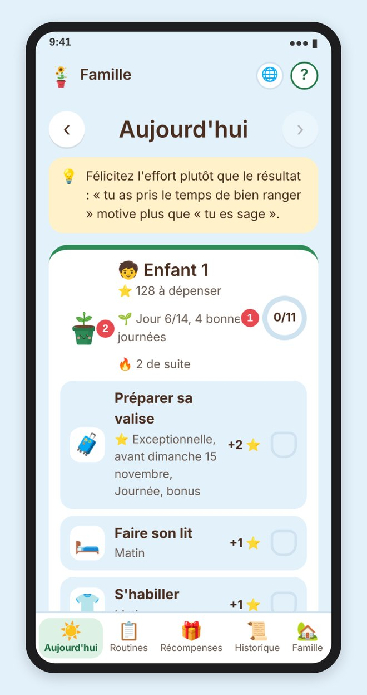
La suite, dans la partie 2c : les récompenses, l'historique des étoiles et les malus.
2c Récompenses et historique
L'onglet Récompenses sert à définir ce que l'enfant peut s'offrir avec ses étoiles. Les prix sont calculés automatiquement selon son rythme. Cette partie suit les parties 2a (enfant créé) et 2b (routines créées) : sans routines, le rythme vaut 0 et aucun prix ne peut être calculé. L'onglet Historique retrace ensuite, jour par jour, les étoiles gagnées, échangées et cassées.
Le principe du prix : durée d'effort × rythme. Le rythme, c'est le nombre d'étoiles que l'enfant gagne en moyenne par jour, soit 75 % des étoiles prévues dans la semaine, divisé par 7. Avec un rythme de 11,4 ⭐ par jour, une récompense d'environ 1 jour coûte 11 ⭐ et une d'environ 1 mois coûte 340 ⭐. Le prix est arrondi puis figé à la création ; il ne bouge pas si les routines changent ensuite.
Le prix affiché est celui qui est enregistré : dans le référentiel, il se recalcule à chaque case cochée ou décochée. Il ne dépasse jamais 5000 ⭐. Pour un enfant sans routine obligatoire, il n'y a pas de rythme : l'application l'indique, propose d'aller aux routines, ou de cocher « Prix fixe ».
L'onglet Récompenses
Ouvrez l'onglet Récompenses dans la barre du bas. Il affiche le solde d'étoiles à dépenser de l'enfant sélectionné et son rythme.
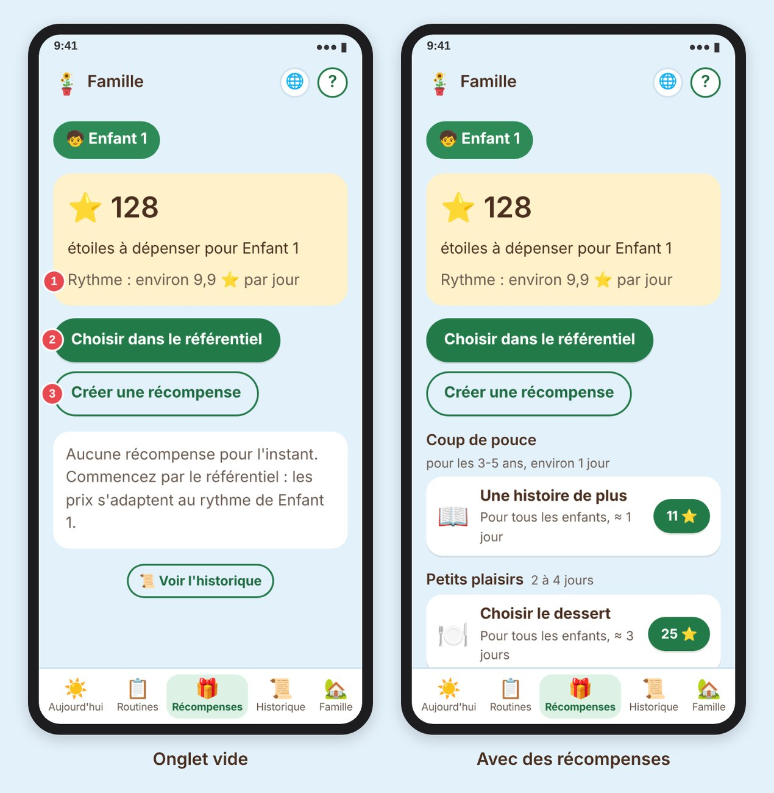
- Rythme : étoiles gagnées par jour en moyenne (ici environ 9,9). C'est la base de tous les prix.
- Choisir dans le référentiel : le plus rapide pour démarrer.
- Créer une récompense : une récompense à vous.
Une fois remplie, la liste est rangée par niveau, du moins cher au plus cher. Chaque carte indique pour qui elle vaut, la durée d'effort approximative et le prix. Un événement affiche aussi sa date. En bas de la liste, Voir l'historique ouvre l'onglet Historique.
Choisir dans le référentiel
Le référentiel propose des récompenses toutes prêtes, classées en six niveaux. Les prix affichés sont déjà calculés pour chaque enfant.
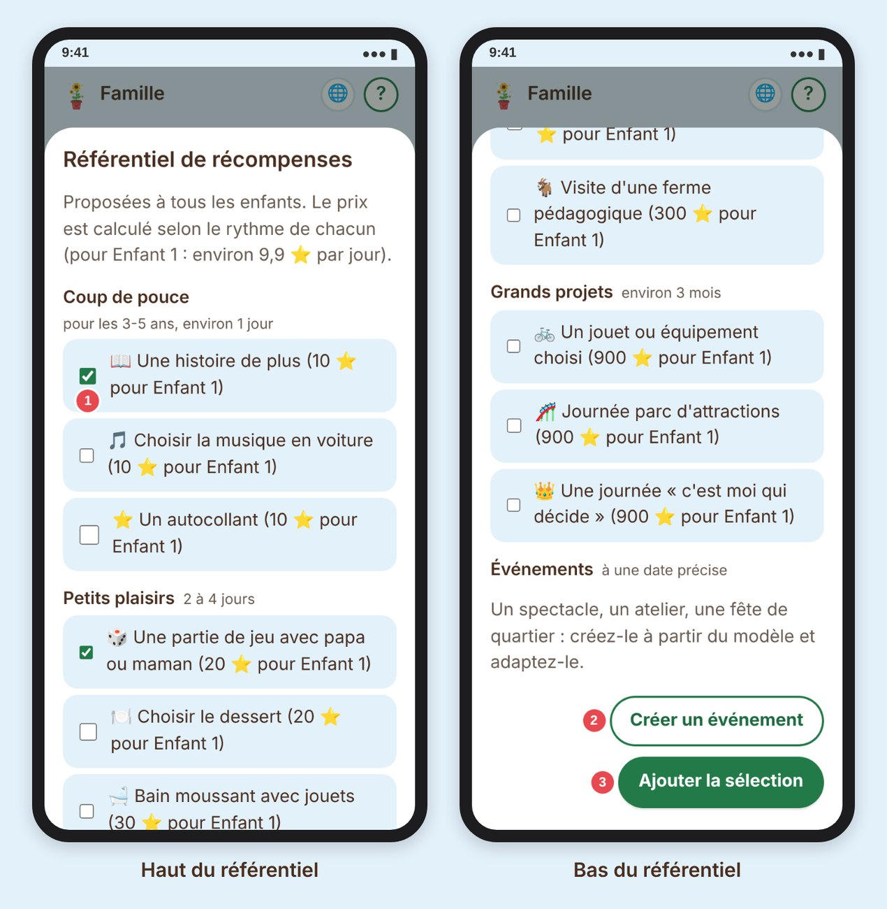
- Cochez les récompenses qui vous conviennent, dans tous les niveaux.
- Créer un événement ouvre le formulaire événement, déjà prérempli.
- Ajouter la sélection ajoute d'un coup tout ce qui est coché. Les récompenses ajoutées valent pour tous les enfants, chacun à son prix.
| Niveau | Durée d'effort | Exemple (rythme 11,4) |
|---|---|---|
| Coup de pouce | environ 1 jour, pour les 3-5 ans | Une histoire de plus : 11 ⭐ |
| Petits plaisirs | 2 à 4 jours | Choisir le dessert : 25 ⭐ |
| Moments partagés | 1 à 2 semaines | Soirée film en famille : 160 ⭐ |
| Sorties | environ 1 mois | Visite d'une ferme pédagogique : 340 ⭐ |
| Grands projets | environ 3 mois | Un jouet ou équipement choisi : 1000 ⭐ |
| Événements | à une date précise | Un spectacle, un atelier : à créer |
Vous pouvez revenir dans le référentiel à tout moment pour en ajouter d'autres.
Créer une récompense ou un événement
Le formulaire est le même pour une récompense et pour un événement. Seul le niveau change : un événement est une récompense du niveau « Événements », avec une date.
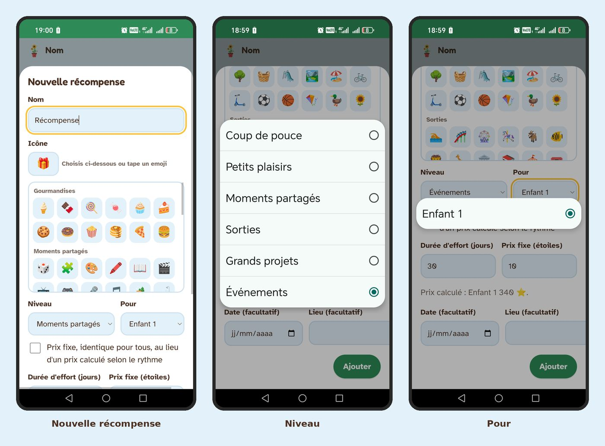
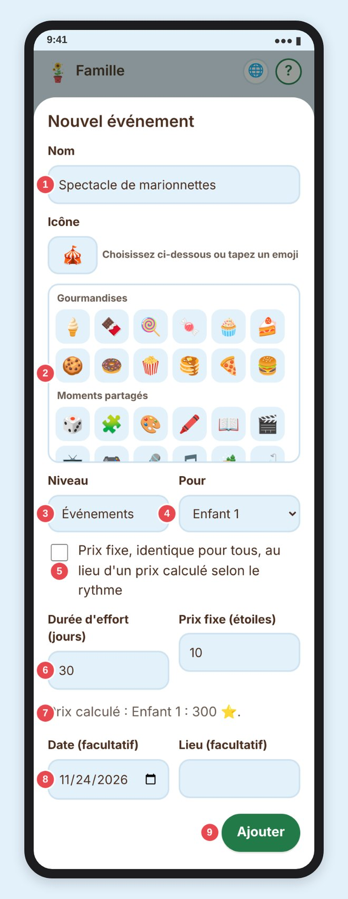
- Nom : ce que l'enfant verra, par exemple « Spectacle de marionnettes ».
- Icône : touchez une icône dans la grille ou tapez un emoji.
- Niveau : de Coup de pouce à Événements. Il sert au rangement et propose une durée par défaut.
- Pour : l'enfant concerné.
- Prix fixe : cochez cette case pour un prix identique pour tous, au lieu d'un prix calculé selon le rythme.
- Durée d'effort (jours) si la case est décochée, ou Prix fixe (étoiles) si elle est cochée. Un seul des deux champs compte.
- Prix calculé : l'aperçu du prix pour chaque enfant. Ici 30 jours × 11,4 ⭐, arrondi à 340 ⭐.
- Date et Lieu : facultatifs. Pour un événement, mettez la date ; elle s'affiche sur la carte.
- Ajouter enregistre la récompense dans la liste.
Conseil : pour un événement, choisissez une durée qui laisse à l'enfant le temps d'économiser avant la date. Un spectacle dans 10 jours ≈ 10 jours d'effort.
L'onglet Historique
L'onglet Historique montre d'où vient le solde de l'enfant sélectionné : les 30 derniers jours, jour par jour, du plus récent au plus ancien. Tous les adultes de la famille le consultent ; seuls les parents cassent une étoile ou annulent.
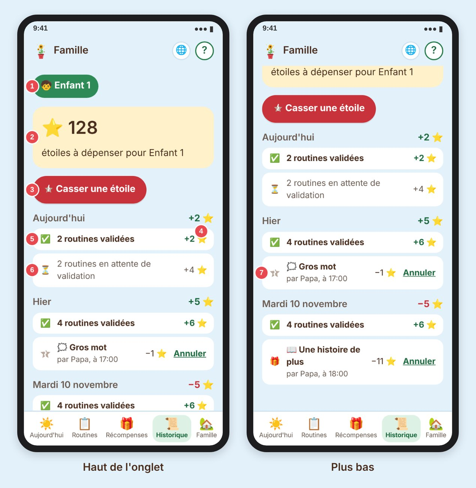
- L'enfant sélectionné : avec plusieurs enfants, touchez son nom pour passer de l'un à l'autre.
- Solde : les étoiles à dépenser, et celles en attente de validation.
- Casser une étoile : applique un malus (Premium, voir plus bas).
- Le jour et son bilan : étoiles gagnées moins étoiles échangées et cassées, en vert ou en rouge.
- Routines validées : les étoiles gagnées ce jour-là. Elles comptent au jour de la routine, même si elles ont été validées plus tard.
- En attente : les routines cochées par l'enfant, pas encore validées. Elles n'entrent pas dans le bilan.
- Un échange ou un malus : le motif, qui l'a fait et à quelle heure, le nombre d'étoiles et Annuler.
Les malus (étoiles cassées)
Premium. Les malus font partie du Premium (partie 7).
Un malus retire 1 à 3 étoiles du solde à dépenser pour un écart immédiat. Le solde ne descend jamais sous zéro, et la plante et les badges ne bougent pas. Seuls les parents peuvent casser une étoile.
Préparer les malus prédéfinis
Les malus prédéfinis valent pour tous les enfants. Ils garantissent qu'un même écart coûte la même chose, quel que soit le parent. Ils se préparent dans Famille, section Malus. Faites-le une fois, avant le premier malus.
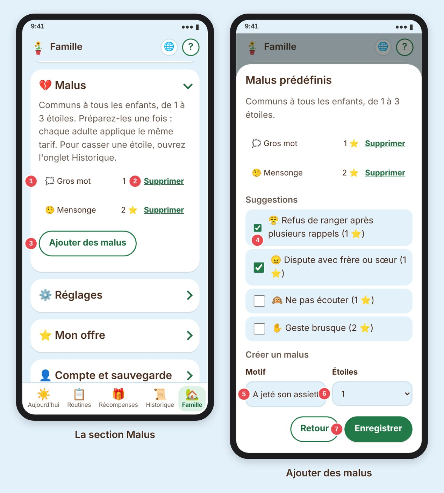
- Les malus enregistrés, avec leurs étoiles.
- Supprimer retire un malus de la liste.
- Ajouter des malus ouvre la fenêtre des suggestions.
- Cochez les suggestions qui vous conviennent.
- Motif : pour un malus à vous, écrivez-le ici.
- Étoiles : choisissez 1, 2 ou 3.
- Enregistrer ajoute d'un coup les cases cochées et le motif saisi. Retour ferme la fenêtre sans enregistrer.
Un malus créé à la main prend l'icône cœur brisé.
| Suggestion | Étoiles |
|---|---|
| Refus de ranger après plusieurs rappels | 1 |
| Gros mot | 1 |
| Dispute avec frère ou sœur | 1 |
| Ne pas écouter | 1 |
| Geste brusque | 2 |
| Mensonge | 2 |
Casser une étoile
Dans l'onglet Historique, touchez Casser une étoile. Le malus s'applique à l'enfant choisi en haut de la fenêtre (s'il y en a plusieurs).
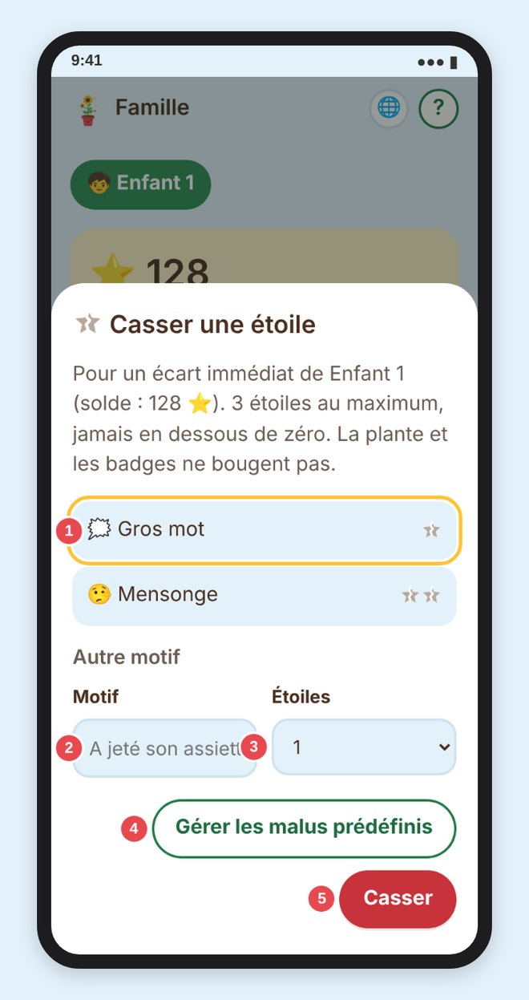
- Touchez un malus prédéfini : il est appliqué tout de suite, sans autre confirmation.
- Autre motif : pour un cas non prévu, écrivez le motif.
- Étoiles : 1, 2 ou 3.
- Gérer les malus prédéfinis ouvre la même fenêtre que dans Famille ; Retour revient ici.
- Casser applique l'autre motif.
Le rappel en haut de la fenêtre indique le solde actuel de l'enfant. Si l'enfant n'a aucune étoile à dépenser, l'application l'indique : il n'y a rien à casser.
Annuler un malus
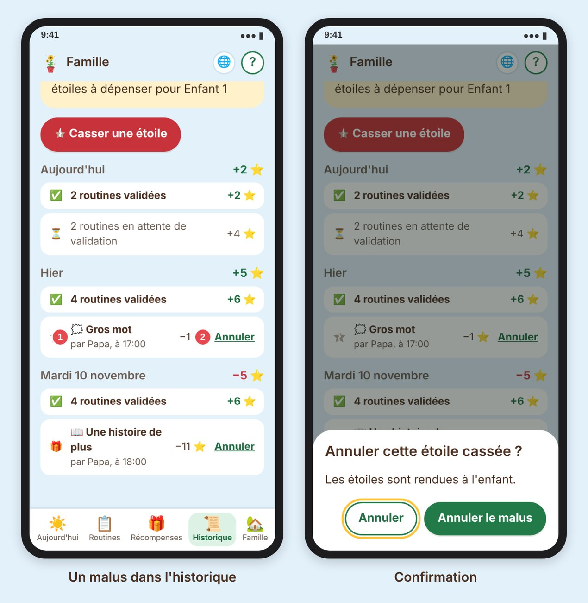
- La ligne du malus, au jour où il a été appliqué : le motif, le parent qui a cassé l'étoile, l'heure et le nombre d'étoiles.
- Annuler : après confirmation, les étoiles sont rendues à l'enfant. Pratique en cas d'erreur d'enfant ou de motif.
2d Membres et téléphone de l'enfant
L'onglet Famille sert à inviter les adultes qui suivent l'enfant et à connecter son téléphone. Cette partie suit la partie 2a (enfant créé).
Deux niveaux de droits existent :
| Droits | Ce qu'il peut faire |
|---|---|
| Parent | Tout : routines, récompenses, malus, membres, téléphones, réglages. |
| Proche | Cocher et valider les routines, échanger les récompenses. Il ne casse pas d'étoile et ne modifie pas la configuration. |
Chaque validation garde le nom de l'adulte qui l'a faite, ce qui permet de savoir qui a validé quoi.
Dans la page Famille, touchez le titre d'une section pour la déplier (ici Membres de la famille).
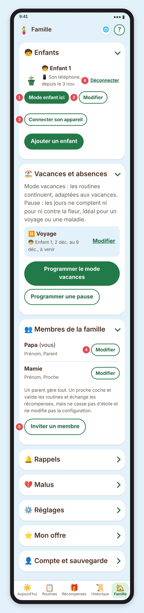
- Mode enfant ici : votre téléphone passe en mode enfant (voir plus bas).
- Modifier l'enfant.
- Connecter son appareil : le téléphone de l'enfant.
- Modifier un membre.
- Inviter un membre.
- Déconnecter : apparaît sous l'enfant pour chaque téléphone connecté.
Inviter un membre
Premium. La version gratuite réunit deux parents. Inviter plus d'adultes, ou des proches, fait partie du Premium (partie 7).
L'invitation se fait par un code à 6 caractères, valable 48 heures. Seul un parent peut inviter.
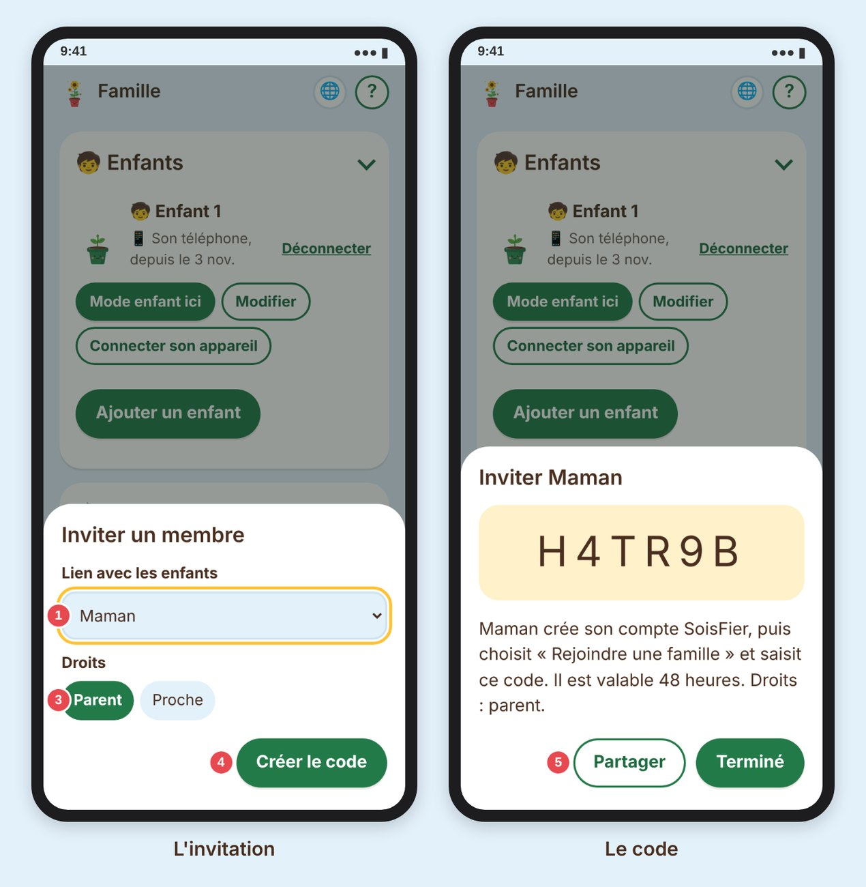
- Lien avec les enfants : Papa, Maman, Papy, Mamie, Tonton, Tata, Parrain, Marraine, Nounou ou Autre. Chaque membre le voit dans sa propre langue (« Maman » s'affiche « Mum » en anglais).
- Libellé personnalisé (facultatif) : le nom affiché, par exemple « Mamie Josette ». Utile s'il y a deux mamies. Il s'affiche tel quel, sans traduction.
- Droits : Parent ou Proche (voir le tableau plus haut).
- Créer le code affiche le code d'invitation.
- Partager envoie le code par SMS, WhatsApp ou mail. Sinon, dictez-le.
Si le code expire avant d'être utilisé, créez-en simplement un nouveau.
Côté invité : rejoindre la famille
La personne invitée fait ces étapes sur son propre téléphone.
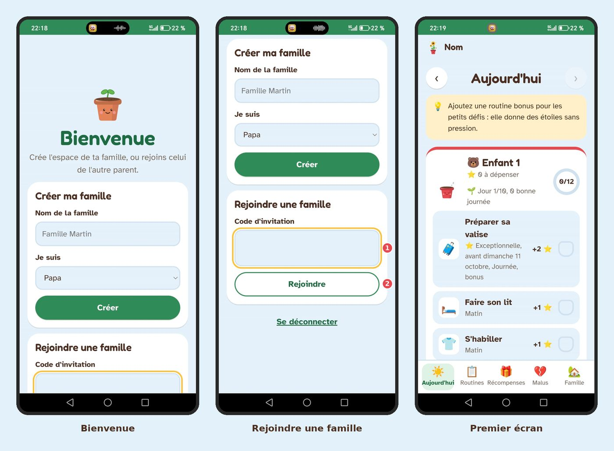
- Elle installe SoisFier et crée son compte, comme dans la partie 1.
- Sur l'écran Bienvenue, elle ignore « Créer ma famille » et descend jusqu'à Rejoindre une famille.
- Elle saisit le code d'invitation (1) puis touche Rejoindre (2).
- Elle arrive sur l'écran Aujourd'hui, avec les enfants et les routines déjà en place. Le lien et les droits choisis à l'invitation sont appliqués automatiquement.
Attention : ne pas créer une deuxième famille par erreur. Les enfants et les routines ne seraient pas partagés.
Modifier ou retirer un membre
Touchez Modifier à côté du membre. Chacun peut changer son propre lien et son libellé. Les droits et le retrait d'un autre membre sont réservés aux parents.
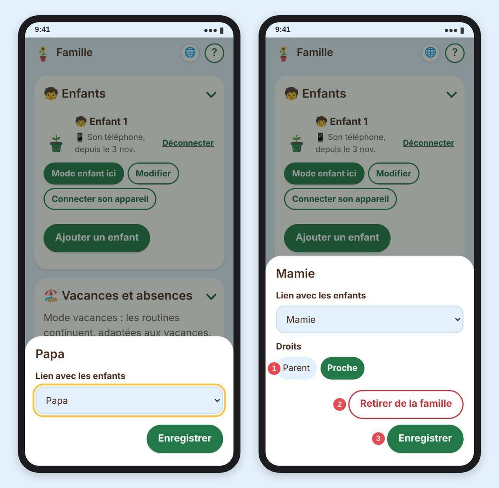
- Droits : passe un membre de Parent à Proche, ou l'inverse.
- Retirer de la famille : après confirmation, la personne n'a plus accès à la famille. L'historique de ses validations est conservé.
- Enregistrer valide les changements.
Sur votre propre fiche, il n'y a ni Droits ni Retirer : un parent ne peut pas se rétrograder ni se retirer lui-même par erreur.
Connecter le téléphone de l'enfant
L'enfant n'a pas de compte ni d'adresse mail : son téléphone est relié par un code à usage unique, valable 15 minutes.
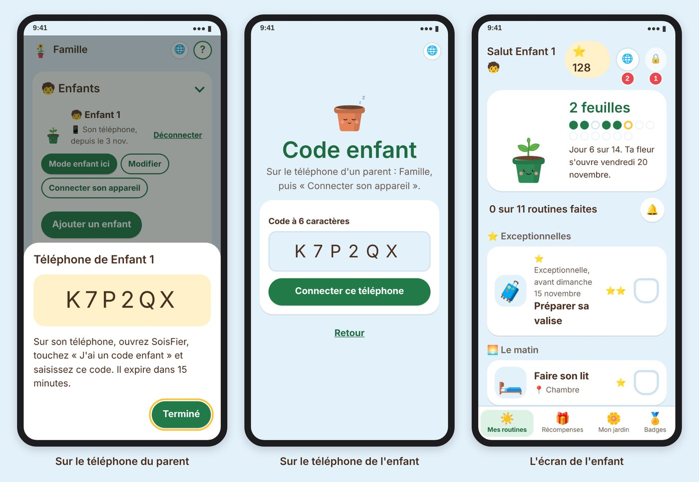
- Sur votre téléphone : Famille, puis Connecter son appareil sous l'enfant. Un code à 6 caractères s'affiche.
- Sur le téléphone de l'enfant : ouvrez SoisFier et touchez J'ai un code enfant sur l'écran de connexion (voir la partie 1).
- Saisissez le code puis touchez Connecter ce téléphone.
- L'enfant arrive sur son écran : son prénom, ses étoiles, son pot et ses routines du jour. Le cadenas (1) en haut à droite permet à un parent de déconnecter ce téléphone. Si le code est oublié, le lien Code oublié ? demande le mot de passe du compte ; après trop d'essais, il faut patienter. Hors connexion, si des coches n'ont pas encore été envoyées, une confirmation prévient qu'elles seraient perdues. Juste après, SoisFier lui propose d'activer ses rappels (partie 4).
- Sur votre téléphone, touchez Terminé. Le téléphone apparaît sous l'enfant dans la page Famille.
Pour retirer un téléphone (perdu, remplacé, ancien test) : Déconnecter sur sa ligne, puis confirmez. Il faudra un nouveau code pour le reconnecter.
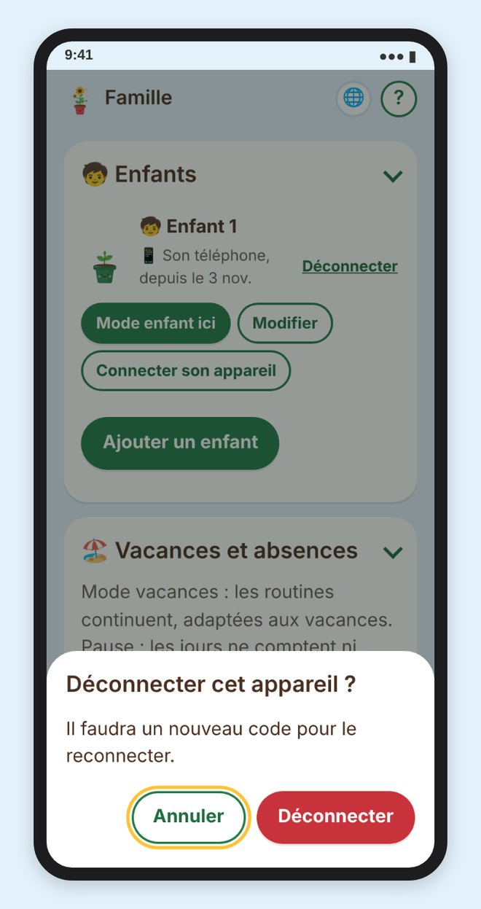
Mode enfant sur votre téléphone
Pour un enfant sans téléphone, votre propre téléphone peut passer en mode enfant le temps qu'il coche ses routines.
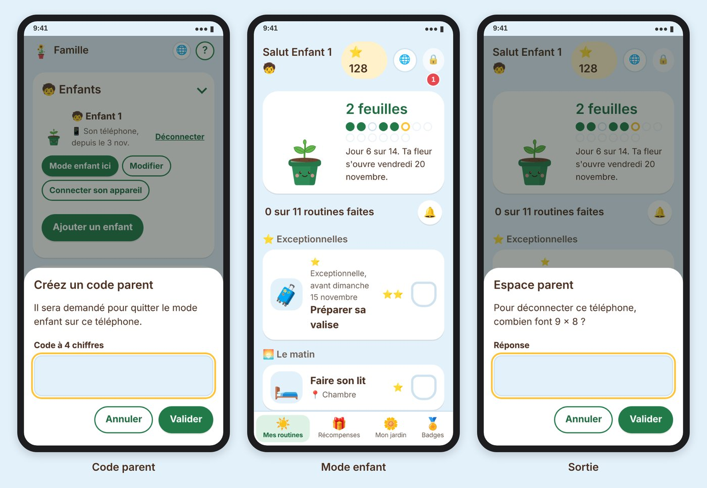
- Famille, puis Mode enfant ici, le premier bouton sous l'enfant.
- La première fois, créez un code parent à 4 chiffres. Il sera demandé pour quitter le mode enfant sur ce téléphone ; ne le donnez pas à l'enfant.
- L'écran de l'enfant s'affiche, comme sur son propre téléphone.
- Pour revenir à l'espace parent, touchez le cadenas (1) puis saisissez le code parent.
Le téléphone apparaît sous l'enfant comme « Téléphone de Papa (mode enfant) ». Repasser en mode enfant réutilise cette même ligne, sans en créer une nouvelle.
Modifier un enfant
Touchez Modifier sous l'enfant pour changer son prénom, son avatar ou la couleur de son pot.
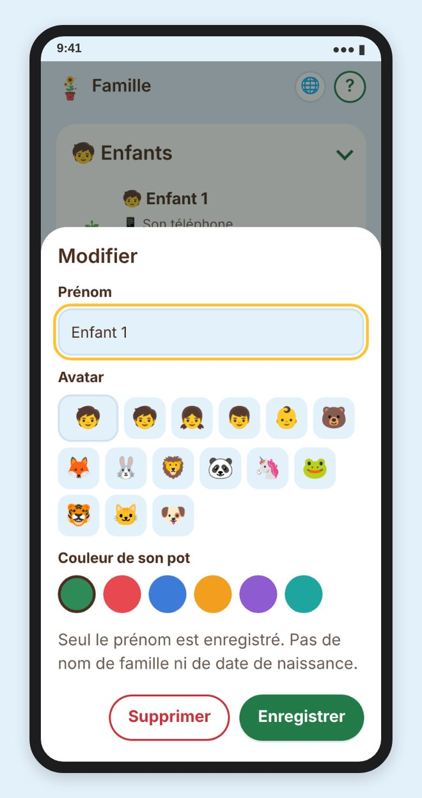
Seul le prénom est enregistré : pas de nom de famille ni de date de naissance. Supprimer efface l'enfant ainsi que ses routines, ses étoiles et son jardin. À réserver au cas d'un enfant créé par erreur.
3 Le quotidien du parent
Au quotidien, le parent fait trois gestes : cocher ou valider les routines, échanger les récompenses et, si besoin, mettre une pause. Tout se fait depuis les onglets Aujourd'hui et Récompenses, les pauses depuis Famille (partie 6) ; les malus sont dans la partie 2c.
La règle à retenir : une étoile ne compte qu'une fois validée par un adulte. Ce qui n'est pas refusé est validé automatiquement après minuit.
L'écran Aujourd'hui
C'est l'écran d'ouverture. Il montre, pour chaque enfant, les routines prévues ce jour-là.
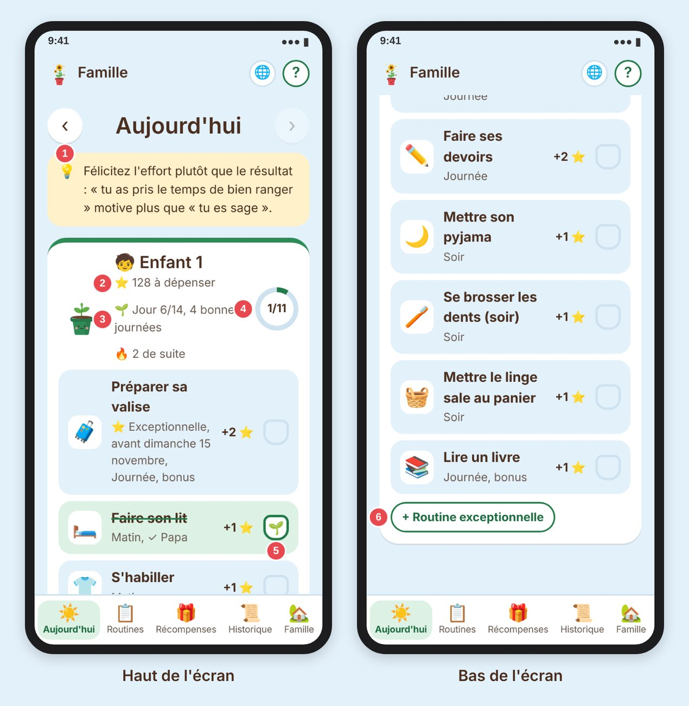
- Flèches : revenir jusqu'à 6 jours en arrière pour cocher un oubli. Impossible d'aller dans le futur.
- À dépenser : le solde d'étoiles de l'enfant.
- Jour 1/10, 0 bonne journée : où en est la fleur en cours et combien de bonnes journées elle compte déjà.
- Compteur : routines faites sur le total du jour.
- Case à cocher de chaque routine.
- + Routine exceptionnelle : ajoute une routine ponctuelle (partie 2b).
Le bandeau ampoule change chaque jour. Il n'apparaît que sur le jour en cours.
Cocher et valider les routines
Tout dépend de qui coche :
| Qui coche | Ce qui se passe |
|---|---|
| Un adulte, depuis Aujourd'hui | La routine est validée tout de suite : elle passe en vert avec « ✓ Papa ». |
| L'enfant, depuis son téléphone ou le mode enfant | La routine part dans le bloc À valider en haut de l'écran Aujourd'hui. |
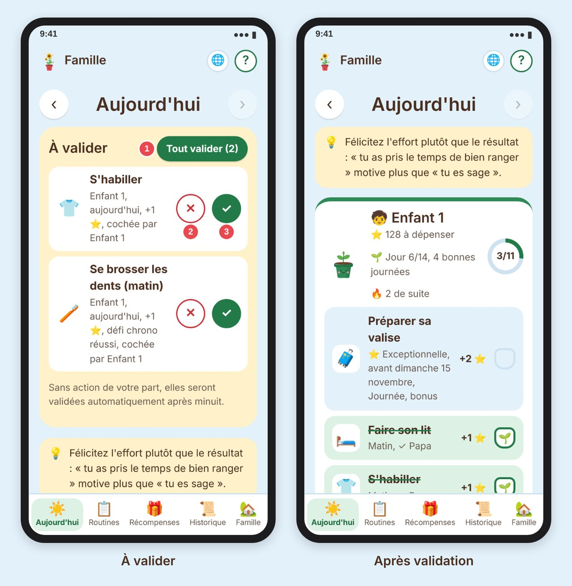
- Tout valider valide d'un coup toutes les routines en attente.
- Refuser (croix) : la routine est à refaire, sans pénalité. Les étoiles ne sont pas données.
- Valider (coche) : les étoiles s'ajoutent au solde et comptent pour la fleur.
Chaque ligne indique l'enfant, le jour, les étoiles et qui a coché. Sans action de votre part, tout ce qui reste est validé automatiquement après minuit.
Vous avez coché par erreur ? Retouchez la case dans les 5 minutes pour décocher. Au-delà, la routine est définitivement validée ; pour retirer des étoiles, il faut passer par un malus.
Échanger une récompense
Quand l'enfant a assez d'étoiles, l'échange se fait depuis l'onglet Récompenses, en choisissant l'enfant en haut s'il y en a plusieurs.
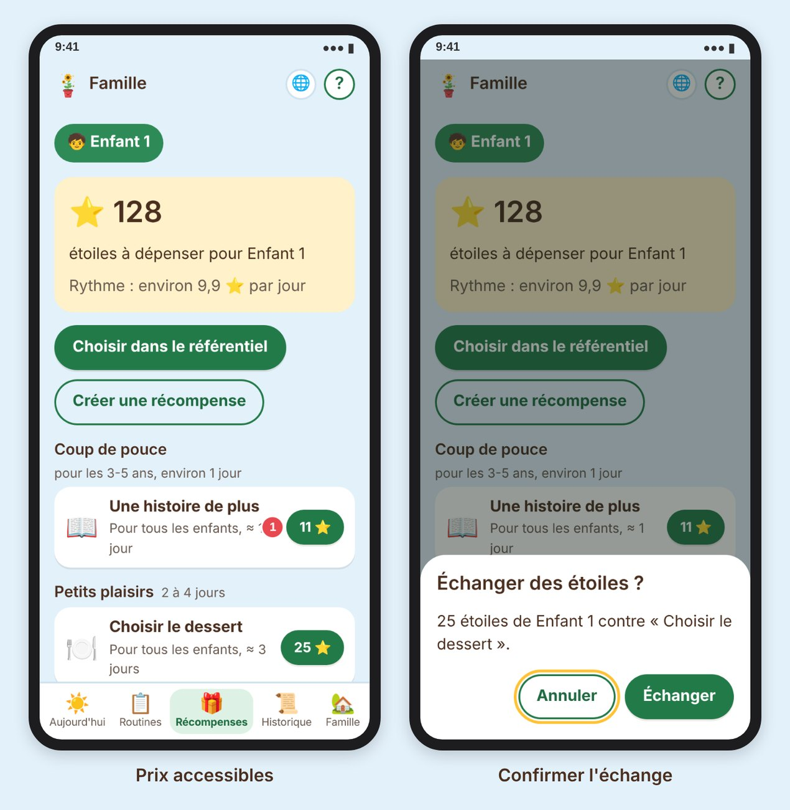
- Prix en vert plein : l'enfant a assez d'étoiles. Touchez le prix pour échanger.
- Prix en contour clair : pas encore assez d'étoiles, le bouton ne fait rien.
Confirmez avec Échanger : le prix est retiré du solde (ici 18 − 11 = 7 ⭐) et le message « Récompense échangée » s'affiche. La récompense reste dans la liste et peut être échangée à nouveau plus tard.
L'enfant peut aussi échanger lui-même depuis son téléphone (partie 4).
Chaque échange est noté dans l'onglet Historique, au jour de l'échange, avec le prix, qui l'a fait et l'heure. Un parent peut l'Annuler (1) : après confirmation, les étoiles sont rendues à l'enfant.
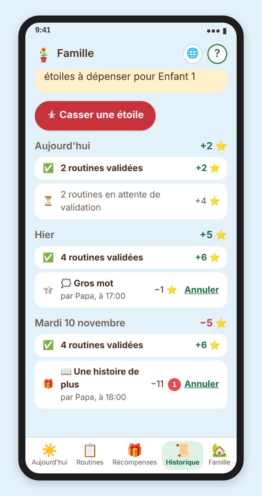
Toucher la carte d'une récompense (hors prix) ouvre sa fiche pour la modifier ou la supprimer.
Si le rythme de l'enfant change de plus de 20 % (routines ajoutées ou retirées), un bandeau propose de recalculer les prix.
Un jour en pause
Une pause neutralise des jours : ils ne comptent ni pour ni contre la fleur. Rien à perdre pendant un voyage, un temps de repos ou un week-end chez les grands-parents. Les pauses se programment dans Famille, section Vacances et absences (partie 6).
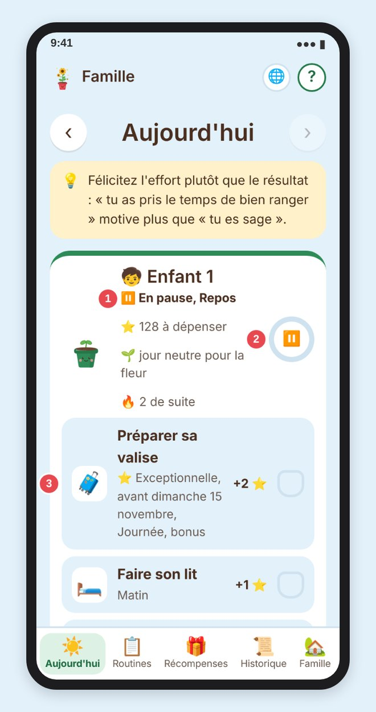
- ⏸️ En pause et le motif, sous le nom de l'enfant. La ligne de la fleur indique « jour neutre ».
- Le compteur est remplacé par ⏸️ : la journée ne compte pas.
- Les routines restent affichées : vous pouvez toujours en cocher une, elle rapporte ses étoiles.
Si une pause tombe pendant des vacances aménagées, c'est la pause qui l'emporte : ⏸️ remplace 🏖️ et la journée reste neutre.
4 Côté enfant
Cette partie montre ce que voit l'enfant, sur son téléphone ou en mode enfant (partie 2d). À lire avec lui la première fois.
| Onglet | Ce qu'il y fait |
|---|---|
| Mes routines | Coche ce qu'il a fait, lance un défi chrono et règle ses rappels. |
| Récompenses | Voit ce qu'il peut s'offrir et combien il lui manque. |
| Mon jardin | Suit sa fleur, son parterre de la saison et son jardin de l'année. |
| Badges | Voit ses badges gagnés et les prochains à décrocher. |
L'enfant ne peut rien modifier : ni routines, ni prix, ni malus. Le cadenas en haut à droite est réservé aux parents.
Mes routines
L'écran d'ouverture liste les routines du jour, rangées par moment : exceptionnelles, matin, journée, soir. S'il ne reste que des défis bonus, l'écran l'indique : « Que des défis bonus aujourd'hui ! ».
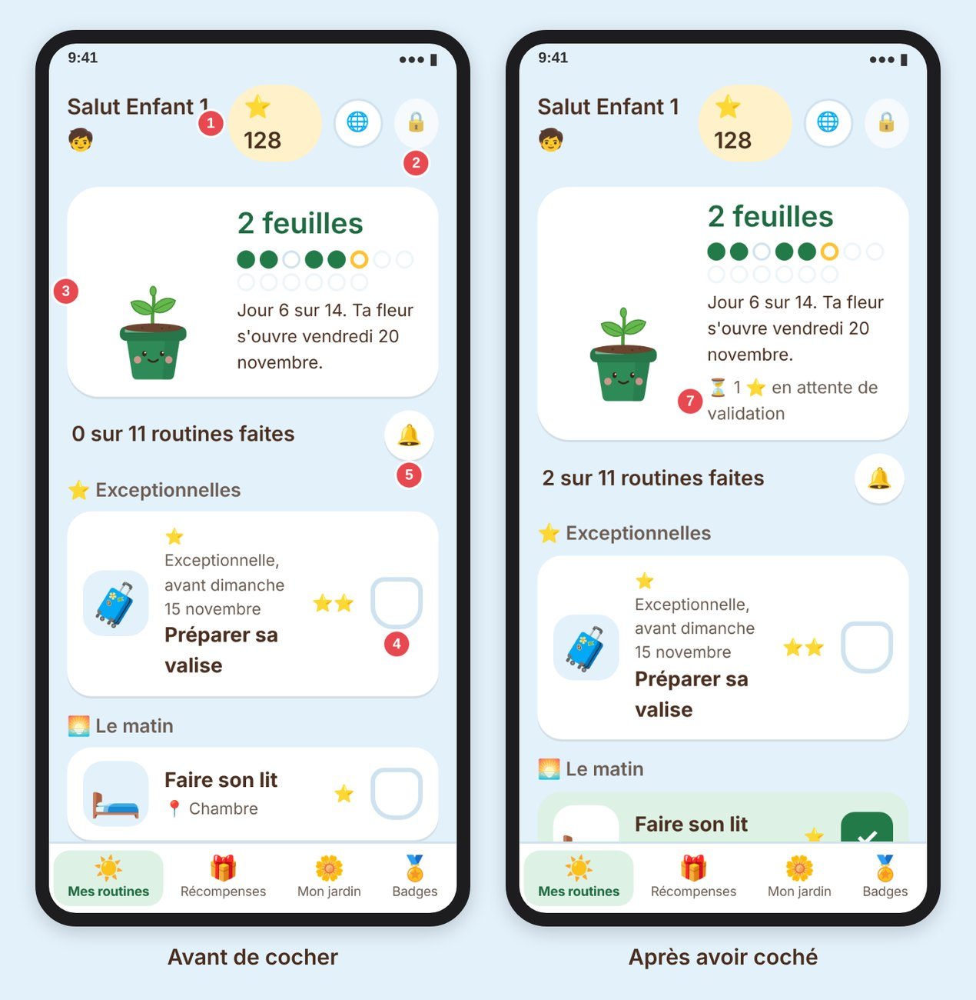
- Étoiles à dépenser.
- Cadenas : réservé aux parents (code parent ou petit calcul).
- La fleur en cours : son nom, un rond par jour et la date à laquelle elle s'ouvre.
- Case à cocher : l'enfant la touche quand c'est fait.
- 🔔 en bout de ligne : ouvre Mes rappels (voir plus bas).
- La routine passe en jaune avec un sablier : « Tes parents vont valider ».
- Les étoiles en attente de validation s'affichent sous la fleur ; elles rejoignent le solde quand un parent valide.
L'enfant peut décocher tant qu'un parent n'a pas validé. Sans internet, les coches sont gardées sur le téléphone et envoyées dès que la connexion revient.
Un jour de pause
Un jour de pause, la journée de l'enfant reste calme : un message lui explique que sa fleur ne bouge pas, et ses routines sont repliées.
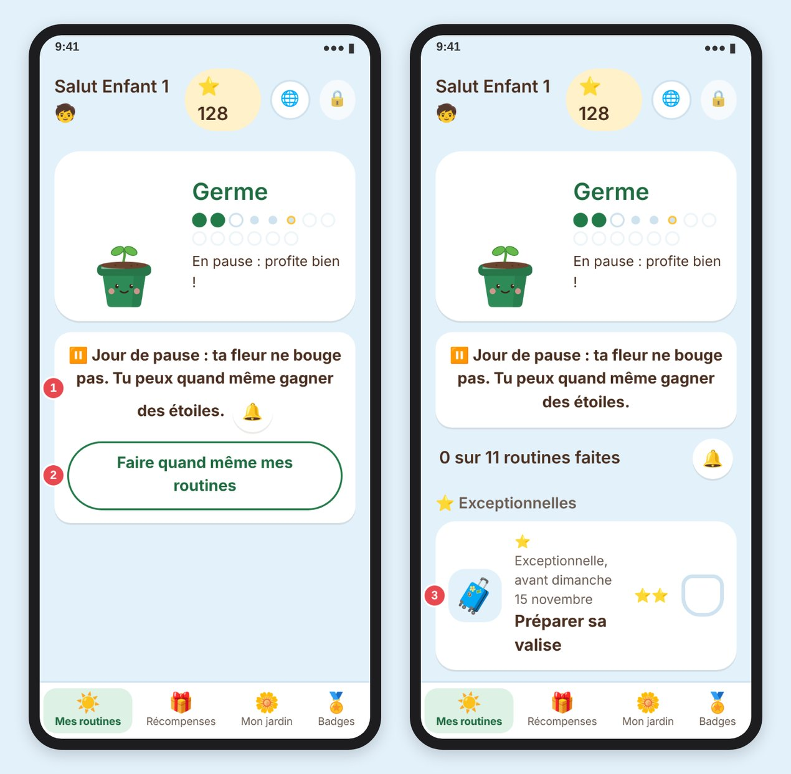
- Le message Jour de pause : la fleur ne bouge pas, mais les étoiles restent à gagner.
- Faire quand même mes routines déplie la liste du jour.
- Les routines se cochent comme d'habitude et rapportent leurs étoiles.
Si l'enfant a déjà coché quelque chose ce jour-là, la liste reste dépliée.
Le défi chrono
Une routine peut avoir un minuteur (réglé par le parent dans la routine, partie 2b). Un bouton jaune Défi X min apparaît alors sous la routine.
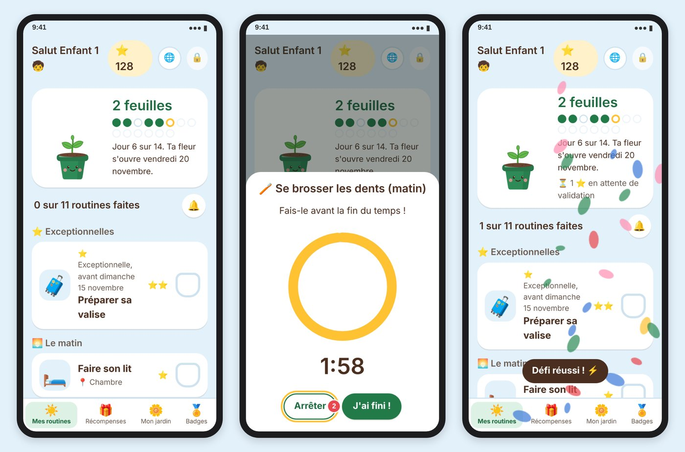
- L'enfant touche Défi 10 min : le minuteur démarre.
- Quand c'est fait, il touche J'ai fini !. Avant la fin du temps, le message « Défi réussi » s'affiche.
- La routine est cochée et part en validation comme d'habitude.
Arrêter coupe le minuteur sans cocher. Un défi réussi ne donne pas d'étoile en plus, mais il compte pour les badges « Défis », et le parent le voit dans le bloc À valider (« défi chrono réussi »).
Les récompenses côté enfant
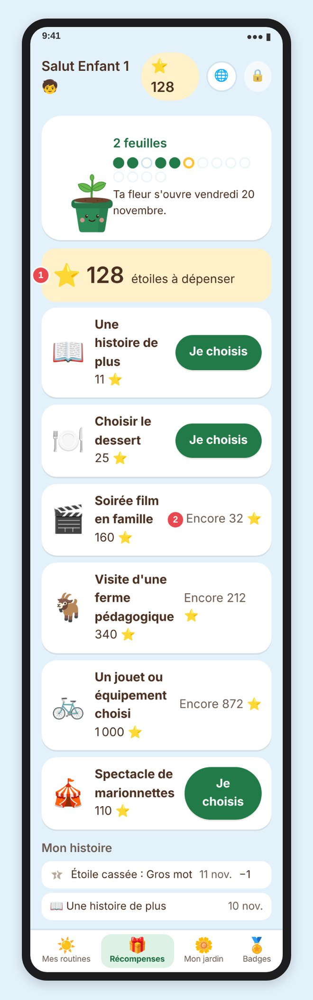
- Étoiles à dépenser, en haut.
- Encore X ⭐ : ce qu'il manque pour chaque récompense. Quand l'enfant a assez, le texte devient un bouton Je choisis.
Quand l'enfant a assez d'étoiles :
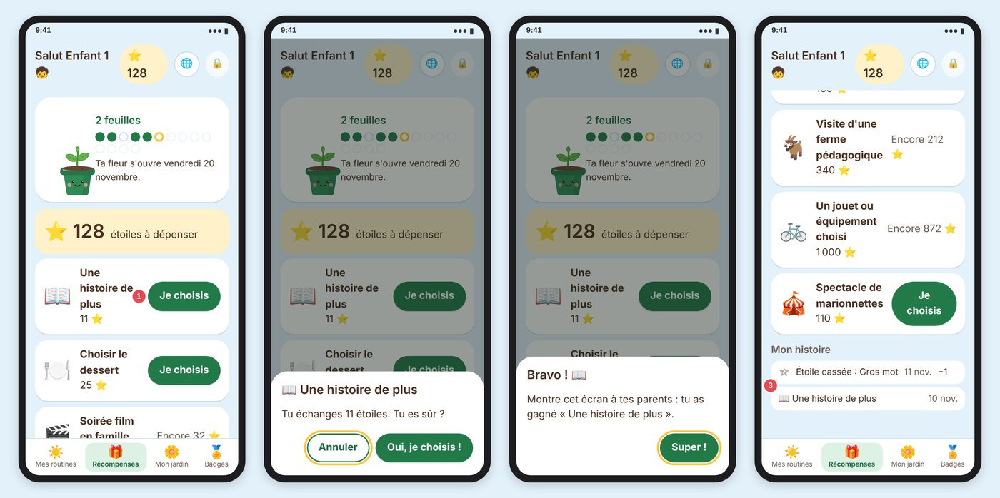
- Il touche Je choisis, puis confirme avec Oui, je choisis !. Les étoiles sont retirées tout de suite (ici 12 − 5 = 7).
- L'écran Bravo ! lui demande de montrer l'écran à ses parents.
- La récompense s'ajoute à Mon histoire, en bas de l'onglet.
Il faut internet pour cette étape. Le parent voit l'échange dans son onglet Historique et peut l'annuler si besoin (partie 3).
Mon jardin
Le jardin montre le chemin parcouru, au-delà de la fleur en cours.
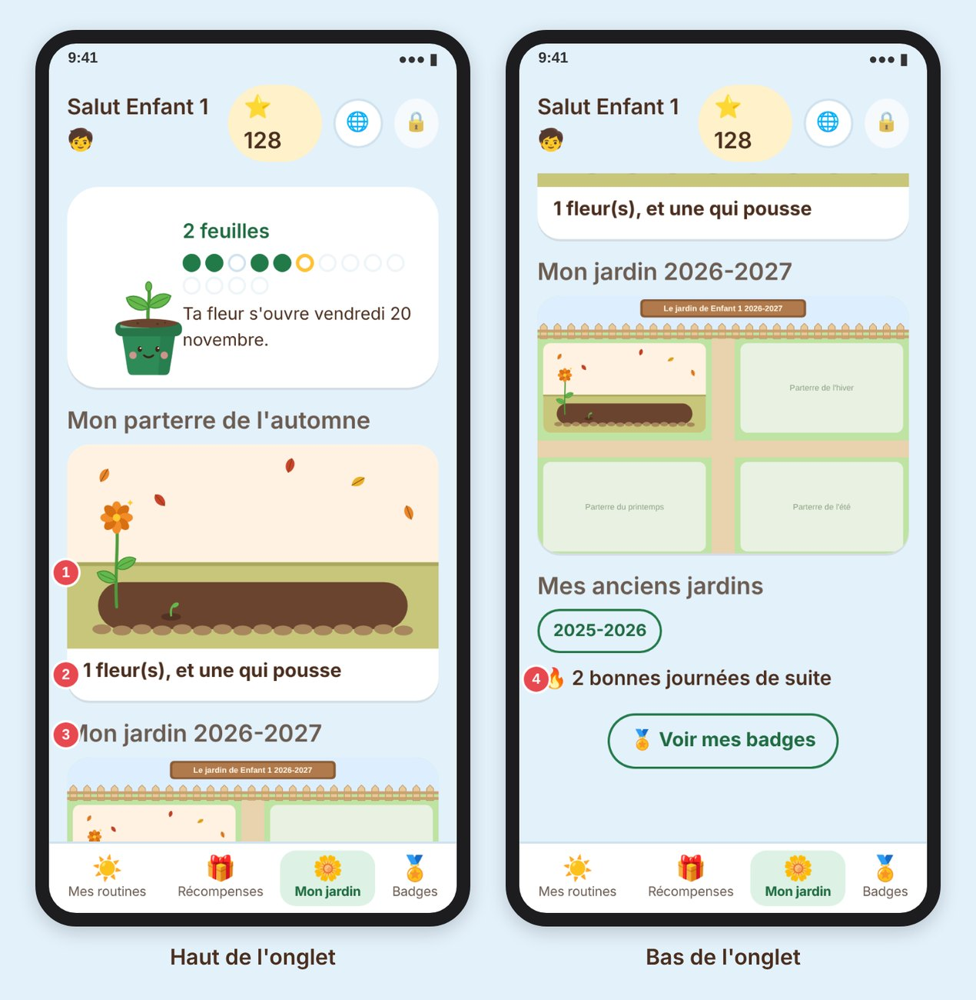
- Parterre de la saison : les fleurs de la saison, une toutes les deux semaines.
- Compteur : fleurs terminées et celle qui pousse.
- Jardin de l'année : quatre parterres, de l'automne à l'été. L'année change au 23 septembre.
- Série : le nombre de bonnes journées d'affilée.
| Fleur | Part de bonnes journées sur la quinzaine |
|---|---|
| Une grande fleur | 90 % ou plus |
| Une belle fleur | 65 % ou plus |
| Une petite fleur | 35 % ou plus |
| Un joli bouton | moins de 35 % |
Une bonne journée = au moins 75 % des étoiles prévues du jour validées. Les jours sans routine ou en pause ne comptent ni pour ni contre.
Mes rappels
Le son et les rappels de l'enfant se règlent avec la cloche 🔔, en bout de la ligne « 0 sur 11 routines faites » de Mes routines (un jour de pause, en bout du message de pause). Ils valent pour ce téléphone.
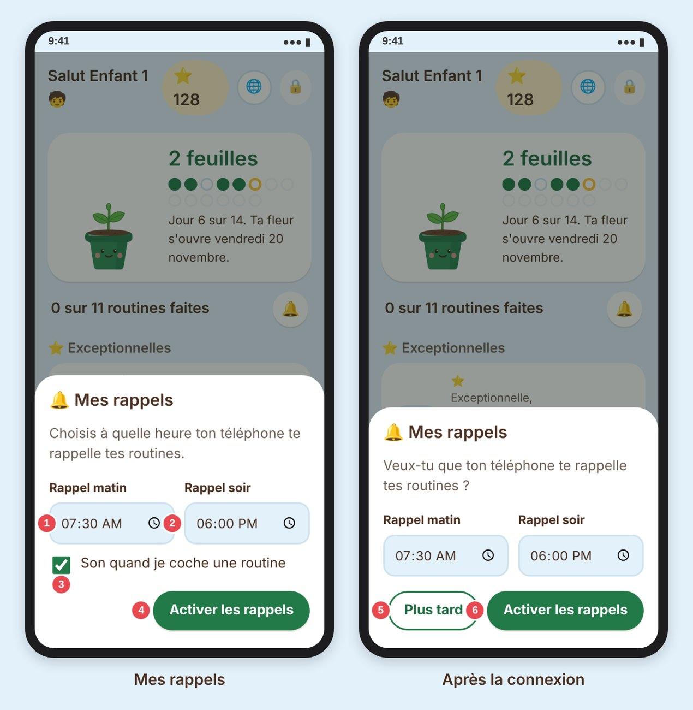
- Rappel matin : l'heure du premier rappel.
- Rappel soir : l'heure du second.
- Son quand l'enfant coche une routine : à couper si besoin.
- Activer les rappels, puis accepter les notifications. Une fois activés : Mettre à jour les rappels et Désactiver.
- Plus tard : ferme la fenêtre ; les rappels restent réglables avec la cloche.
- Activer les rappels : les met en route tout de suite.
Les repères 5 et 6 concernent la fenêtre qui s'ouvre une seule fois, juste après la connexion du téléphone de l'enfant (partie 2d).
En mode enfant sur le téléphone d'un parent, ce téléphone n'a qu'un seul abonnement aux notifications : activer les rappels de l'enfant peut remplacer ceux du parent.
Les badges
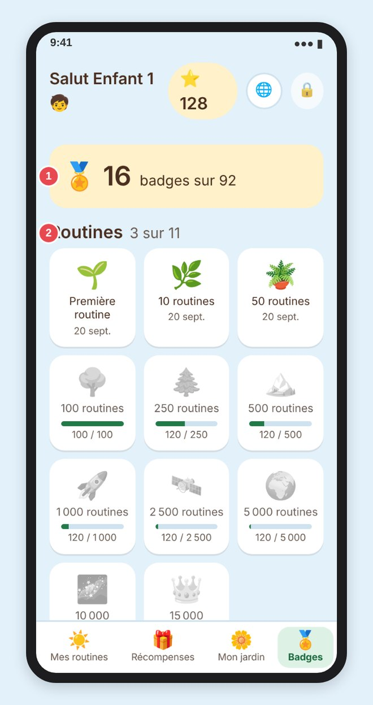
- Total : badges gagnés sur les 92 existants.
- Catégories : chacune affiche son avancement (ici Routines, 1 sur 11).
Un badge gagné est en couleur avec sa date. Les autres sont grisés avec une barre de progression (0 / 10, 0 / 50…). Les paliers vont loin, jusqu'à 15 000 routines, pour durer plusieurs années. Les malus n'enlèvent jamais un badge.
5 Les réglages
Les réglages sont dans l'onglet Famille, dans les sections Rappels, Réglages et Compte et sauvegarde : touchez un titre pour ouvrir la section. Certains valent pour toute la famille, d'autres seulement pour le téléphone sur lequel vous les réglez :
| Réglage | Portée |
|---|---|
| Validation automatique | Toute la famille |
| Rappels | Ce téléphone (chaque parent active les siens) |
| Code parent | Ce téléphone |
| Sauvegarde | Toute la famille |
| Nom de la famille | Toute la famille |
Semaine et fuseau horaire
Dans Famille, la section Réglages affiche la semaine et le fuseau horaire actuels.
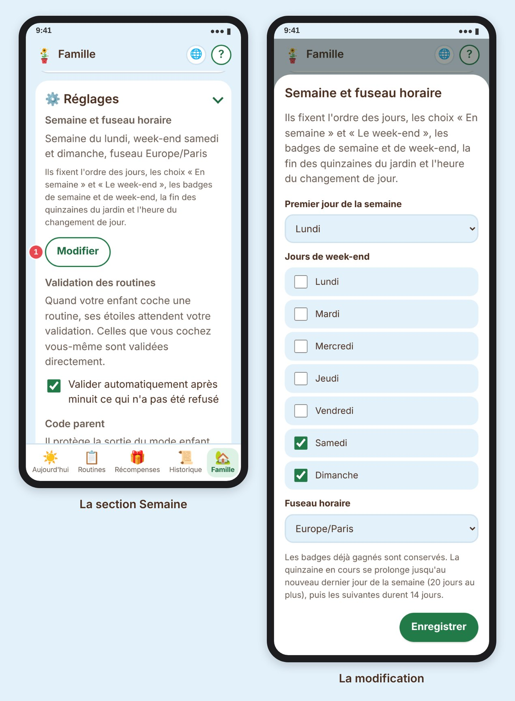
- Modifier ouvre la même fenêtre qu'à la création de la famille (partie 1).
Les badges déjà gagnés restent acquis. Si vous changez le premier jour de la semaine, la quinzaine en cours s'allonge jusqu'au nouveau dernier jour de la semaine (20 jours au plus), puis les quinzaines suivantes reprennent 14 jours.
Validation automatique après minuit
Quand l'enfant coche une routine, ses étoiles attendent votre validation. Ce réglage décide de ce qui se passe si personne ne valide dans la journée.
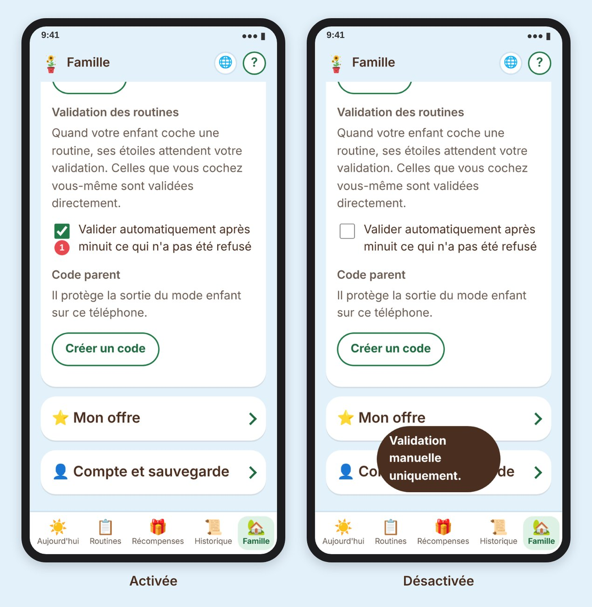
| Case (1) | Après minuit, ce qui reste à valider… |
|---|---|
| Cochée (par défaut) | est validé automatiquement. L'enfant n'est pas pénalisé par un oubli des parents. |
| Décochée | reste en attente jusqu'à votre décision. Message : « Validation manuelle uniquement ». |
Dans les deux cas, ce que vous cochez vous-même est validé tout de suite. Conseil : gardez la case cochée, sauf si vous voulez contrôler chaque routine.
Rappels
Aux heures choisies, une notification résume les routines qui restent à faire. Chaque parent les active sur son propre téléphone ; l'enfant règle les siens avec la cloche 🔔 de Mes routines (partie 4).
- Matin : l'heure du premier rappel.
- Soir : l'heure du second.
- Activer les rappels, puis Autoriser quand Chrome demande la permission d'envoyer des notifications.
- Mettre à jour les rappels : après avoir changé une heure.
- Désactiver : coupe les rappels sur ce téléphone.
Si vous avez répondu « Ne pas autoriser », l'application affiche « Les notifications sont bloquées ». Pour corriger : dans Chrome, touchez le cadenas à gauche de l'adresse, puis Autorisations, puis Notifications sur Autoriser. Revenez ensuite sur Activer les rappels.
Code parent, sauvegarde et compte
- Code parent : Changer le code, puis 4 chiffres. Il protège la sortie du mode enfant sur ce téléphone (partie 2d). Sans code, l'application pose un petit calcul à la place.
- Télécharger une copie (JSON) : un fichier avec toutes les données de la famille (enfants, routines, étoiles, récompenses, malus, badges, fleurs, pauses), enregistré dans Téléchargements. Utile une fois par trimestre, par précaution.
- Renommer la famille : change le nom affiché en haut de l'application, pour tous les membres.
- Se déconnecter : ferme votre compte sur ce téléphone. Les données restent en ligne ; il suffit de se reconnecter avec son e-mail et son mot de passe.
Le code parent est dans la section Réglages ; la copie, le nom de la famille et la déconnexion dans Compte et sauvegarde, où l'adresse e-mail du compte est rappelée.
L'application se met à jour toute seule : à chaque ouverture, elle vérifie s'il existe une nouvelle version et, si oui, se recharge une fois, en une seconde environ (après la fermeture d'une fenêtre en cours de saisie). La version installée est indiquée en bas de la section Compte et sauvegarde.
6 Vacances et absences
La section Vacances et absences de la page Famille regroupe les deux façons de gérer une période à part : le mode vacances (Premium) et la pause (gratuite). Une seule liste montre, dans l'ordre des dates, les vacances 🏖️ et les pauses ⏸️ en cours et à venir.
Pause ou mode vacances ?
- Pause : les jours ne comptent ni pour ni contre la fleur. Idéal pour un voyage ou un temps de repos.
- Mode vacances : les routines continuent, mais adaptées. Par exemple, le cartable passe en pause, la lecture devient obligatoire et « Arroser les plantes » s'ajoute. Les jours comptent normalement pour la fleur.
Si une pause tombe pendant des vacances aménagées, c'est la pause qui l'emporte : la journée reste neutre, et la ligne de la pause l'indique dans la liste.
Programmer une pause
- Une pause dans la liste : le motif, l'enfant, les dates. Modifier l'ouvre.
- La pause l'emporte sur le mode vacances : cette pause tombe pendant des vacances aménagées.
- Programmer une pause.
- Enfants : cochez le ou les enfants concernés.
- Du et Au : premier et dernier jour inclus. La fin doit être après le début.
- Motif : Voyage, Repos ou Autre.
- Enregistrer.
Une pause peut être programmée à l'avance ou posée après coup, par exemple au retour de voyage. Pendant la pause, l'écran Aujourd'hui l'indique (partie 3), tout comme le téléphone de l'enfant (partie 4).
Modifier ou arrêter une pause
Touchez une pause dans la liste pour changer ses dates ou son motif. Tant qu'elle n'a pas commencé, tout se modifie et Supprimer l'annule.
- Une fois la pause commencée, son premier jour ne change plus : les jours déjà neutres le restent.
- La fin se modifie : pour prolonger un repos, repoussez-la.
- Arrêter met fin à la pause : un message confirme que le dernier jour devient hier et que les journées comptent à nouveau dès aujourd'hui.
Une erreur de saisie ? Pendant les 24 heures qui suivent sa création, une pause commencée peut encore être corrigée ou supprimée.
Programmer le mode vacances
- Famille, section Vacances et absences : Revoir, sur la ligne 🏖️ des vacances, ouvre leurs réglages.
- Programmer le mode vacances : choisissez l'enfant, donnez un nom (« Vacances de Noël ») et les dates. Le menu Reprendre les réglages de recopie une période précédente du même enfant. Puis Continuer.
- Nom et dates et Arrêter (ou Supprimer si les vacances n'ont pas commencé).
- Routines habituelles : chacune est « Comme d'habitude » par défaut. Touchez celles à changer.
- Routines de vacances : des routines qui n'existent que pendant ces vacances. + Routine de vacances, Choisir des modèles ou Copier d'un frère ou d'une sœur.
Deux vacances d'un même enfant ne peuvent pas se chevaucher.
Régler les routines
- Pendant les vacances : Comme d'habitude, Obligatoire, Bonus ou En pause.
- Jours : par exemple tous les jours au lieu des seuls jours d'école.
- Étoiles : le nombre d'étoiles pendant ces vacances.
Ces réglages ne valent que pour la période : la routine habituelle ne change pas et reprend telle quelle après les vacances. Comme d'habitude annule le réglage.
Pendant les vacances
- Dans l'onglet Routines, un bandeau 🏖️ rappelle les vacances en cours. La liste montre la version vacances.
- Voir les routines habituelles bascule vers les routines qui reprendront après, par exemple pour préparer la rentrée.
- Dans la version vacances, chaque modification ne s'applique qu'aux vacances en cours ; un message le rappelle à chaque enregistrement. Une routine créée devient une routine de vacances.
Sur le téléphone de l'enfant, un petit 🏖️ avec le nom des vacances explique pourquoi sa liste a changé (repère 5). Le planning à imprimer suit aussi les vacances : les routines de vacances y sont marquées 🏖️.
Les prix des récompenses restent calculés sur les routines habituelles : ils ne bougent pas pendant les vacances.
Modifier ou arrêter des vacances
Nom et dates change le nom et la fin (et le début, tant que les vacances n'ont pas commencé). Arrêter met fin à des vacances en cours : un message confirme que le dernier jour devient hier et que les routines habituelles reprennent dès aujourd'hui. Les étoiles déjà gagnées restent.